unlink("data-raw", force = TRUE, recursive = TRUE)Rotoehu QC
Load data
The raw data was downloaded from the Bay of Plenty hydroTel SFTP server. The data were then collated into a CSV file which can be downloaded from GitHub or within R using the piggyback package. The data are stored in the data-raw folder.
dir.create("data-raw", showWarnings = FALSE)
# Hydrotel data
piggyback::pb_download(
file = "rotoehu_data_raw.zip",
dest = ".",
repo = "limnotrack/f_rotoehu",
tag = "v0.0.1"
)
# Unzip the file to tempdir
tmp_dir <- tempdir()
unzip("rotoehu_data_raw.zip", exdir = tmp_dir)
# Move files into data-raw
file.copy(list.files(file.path(tmp_dir, "rotoehu_data_raw"), full.names = TRUE),
"data-raw", overwrite = TRUE) [1] TRUE TRUE TRUE TRUE TRUE TRUE TRUE TRUE TRUE TRUE TRUE TRUE TRUE# Delete zip file
unlink("rotoehu_data_raw.zip", force = TRUE)
# Read in raw data
dat <- read_csv("data-raw/rotoehu_sftp_compiled_raw.csv") |>
mutate(datetime = as_datetime(Date)) |>
filter(datetime >= as_datetime("2011-04-27 00:00:00")) |>
arrange(datetime)Load metadata
Load metadata about the site, site events, devices, and variables. This includes the site location, device IDs, variable names, and sensor calibration data.
site_sel <- "f_Rotoehu"
site <- read_csv("data-raw/site.csv")
site_events <- read_csv("data-raw/site_events.csv")
site_devices <- read_csv("data-raw/site_devices.csv")
device_var <- read_csv("data-raw/device_variable.csv")
device_position <- read_csv("data-raw/device_position.csv")
sensor_reference <- read_csv("data-raw/sensor_reference.csv")
sensor_calibrations <- read_csv("data-raw/sensor_calibrations.csv")
sensor_scaling <- read_csv("data-raw/sensor_scaling.csv")
variable_ref <- read_csv("data-raw/variables.csv")
qc_filters <- read_csv("data-raw/qc_filters.csv")
sensor_map <- site_devices |>
select(site, device_id, date_from, date_to) |>
left_join(device_var, by = "device_id") |>
left_join(device_position, by = "device_id") |>
mutate(var_ref_id = generate_var_ref(var_abbr, z_relative, reference))
sensor_map# A tibble: 33 × 8
site device_id date_from date_to var_abbr reference
<chr> <chr> <dttm> <dttm> <chr> <chr>
1 f_Rotoe… sns_Sp_c… 2011-04-20 00:00:00 2013-06-26 00:00:00 f_chl d
2 f_Rotoe… sns_TD_c… 2016-04-29 00:00:00 2022-05-05 00:00:00 f_chl d
3 f_Rotoe… sns_Tr_m… 2013-06-28 00:00:00 2016-04-28 00:00:00 f_chl d
4 f_Rotoe… sns_Tr_m… 2011-04-20 00:00:00 2014-12-19 12:45:00 f_phyc d
5 f_Rotoe… sns_Tr_m… 2014-12-19 13:00:00 2021-03-17 14:00:00 f_phyc d
6 f_Rotoe… sns_Tr_m… 2014-12-19 13:00:00 2021-03-17 14:00:00 f_phyc d
7 f_Rotoe… sns_Tr_m… 2014-12-19 13:00:00 2021-03-17 14:00:00 f_phyc d
8 f_Rotoe… sns_Tr_m… 2014-12-19 13:00:00 2021-03-17 14:00:00 f_phyc d
9 f_Rotoe… sns_Vs_w… 2011-04-20 00:00:00 2022-05-05 00:00:00 t_air h
10 f_Rotoe… sns_Vs_w… 2011-04-20 00:00:00 2022-05-05 00:00:00 pr_baro h
# ℹ 23 more rows
# ℹ 2 more variables: z_relative <dbl>, var_ref_id <chr>1 Site location
Lake Rotoehu is located in the Bay of Plenty region of New Zealand. The monitoring site is located near the centre of the lake around its deepest point.
2 Compile raw hydroTel data from BoP
Check no variables are time-aggregated
2.1 Standardise to 15-minute data (i.e. modify any periods where data were logged every 5-minutes.
- Circular average for wind direction, sum for rainfall, mean for everything else.
rain <- dat |>
select(datetime, contains("rain")) |>
standardise(15, FUN = sum, na.rm = TRUE)
wind_dir <- dat |>
select(datetime, contains("wind_direction")) |>
standardise(15, FUN = avg_circ)
mean_vars <- c("datetime", "air_temp", "barometric_pressure", "battery_voltage",
"chl_a", "do_cont_0.5m", "do_cont_10m", "do_sat_0.5m", "do_sat_10m",
"do_temp_0.5m", "do_temp_10m", "humidity", "isfet_ph", "ph_raw",
"phyco", "solar_radiation", "temperature_0.5m", "temperature_1.5m",
"temperature_10.5m", "temperature_3m", "temperature_5m", "temperature_7m",
"temperature_9m", "wind_speed_m_per_s",
"wind_speed_test", "wind_speed")
means <- dat |>
select(contains(mean_vars)) |>
standardise(15, FUN = mean, na.rm = TRUE)
date_df <- data.frame(datetime = seq.POSIXt(round_date(min(dat$datetime), "15 mins"),
round_date(max(dat$datetime), "15 mins"),
by = 15*60))
dat2 <- list(date_df, means, rain, wind_dir) |>
# left_join(means, by = "datetime") |>
purrr::reduce(function(x, y) {left_join(x, y, by = "datetime")}) |>
arrange(datetime)2.2 Check and correct any variable name misalignments
(e.g., temperature depths incorrectly assigned , Temperature & DO swapped (e.g., Rotoehu around 2016)
DO at 0.5m
plotly_data(dat2, y1 = "do_cont_0.5m", y2 = "do_temp_0.5m", sub = 20)Replace DO data with NA’s wh
date_start <- "2015-11-27 07:45:00"
date_end <- "2016-03-01 10:45:00"
date_range2 <- c("2014-08-20 00:24:36", "2014-12-19 13:59:22")
var1 <- "do_cont_0.5m"
var2 <- "do_temp_0.5m"
dat3 <- dat2 |>
reassign(var1, date_range = c(date_start, date_end)) |>
reassign(var1, date_range = date_range2)
# summary(dat3$do_cont_0.5m)plotly_data(dat3, y1 = "do_cont_0.5m", y2 = "do_temp_0.5m", date_range = date_range2, buffer = 200)Swap DO & temperature back into their correct columns.
swap_start <- "2016-05-10 13:30:00"
swap_end <- "2017-06-08 16:30:00"
dat3 <- swap_cols(dat3, var1 = "do_cont_0.5m", var2 = "do_temp_0.5m",
date_range = c(swap_start, swap_end))plotly_data(dat3, y1 = "do_cont_0.5m", y2 = "do_temp_0.5m",
date_range = c(swap_start, swap_end), buffer = 240, sub = 50)plotly_data(dat3, y1 = "do_cont_0.5m", y2 = "do_temp_0.5m", sub = 50)DO at 10m
Dissolved oxygen is misaligned at 10m in December 2019 to January 2020.
plotly_data(dat3, y1 = "do_cont_10m", y2 = "do_temp_10m", sub = 50)swap_start <- "2019-12-11 11:00:00"
swap_end <- "2020-02-04 11:45:00"
dat3 <- swap_cols(dat3, var1 = "do_cont_10m", var2 = "do_temp_10m", date_range = c(swap_start, swap_end))plotly_data(dat3, y1 = "do_cont_10m", y2 = "do_temp_10m", date_range = c(swap_start, swap_end), buffer = 240, sub = 1)plotly_data(dat3, y1 = "do_cont_10m", y2 = "do_temp_10m", sub = 50)Sensors were all 0.5-1m, we will call them 1m.
Map column names to standard names used in the database.
col_mapping <- c(
# "battery_voltage",
"f_chl_d100" = "chl_a",
"f_phyc_d100" = "phyco",
"c_do_d100" = "do_cont_0.5m",
"c_do_d1000" = "do_cont_10m",
"c_do_sat_d100" = "do_sat_0.5m",
"c_do_sat_d1000" = "do_sat_10m",
"t_wtr_d50" = "temperature_0.5m",
"t_wtr_d100" = "do_temp_0.5m",
"t_wtr_d150" = "temperature_1.5m",
"t_wtr_d300" = "temperature_3m",
"t_wtr_d500" = "temperature_5m",
"t_wtr_d700" = "temperature_7m",
"t_wtr_d900" = "temperature_9m",
"t_wtr_d1000" = "do_temp_10m",
"t_wtr_d1050" = "temperature_10.5m",
"c_ph_d100" = "isfet_ph",
"c_ph_raw_d100" = "ph_raw",
"t_air_h150" = "air_temp",
"pr_baro_h150" = "barometric_pressure",
"pp_rain_h150" = "rainfall",
"h_rh_h150" = "humidity",
"r_swd_h150" = "solar_radiation",
"w_spd_h150" = "wind_speed_m_per_s",
"w_dir_h150" = "wind_direction")
dat4 <- standardise_columns(dat3, col_mapping)Write level one raw data to file.
write_csv(dat4, "data-raw/rotoehu_sftp_compiled_raw_level1.csv")3 Sensor Attribution
Map each sensor onto each data point.
Convert wide dataframe to standardised long format.
raw_long <- raw |>
select(-c(battery_voltage, wind_speed_test, wind_speed)) |>
pivot_longer(cols = -datetime, names_to = "var_ref_id",
values_to = "raw_value")
# Conditional join raw_long with sensor_map using var_ref_id and when datetime is between date_from and date_to
raw_long_device <- map_data_to_devices(data = raw_long,
site_devices = site_devices,
device_var = device_var,
device_position = device_position) |>
mutate(qc_value = round(raw_value, 2),
qc_flag = "",
qc_code = case_when(
is.na(raw_value) ~ "QC 100",
TRUE ~ "QC 200"
)) |>
select(site, datetime, device_id, var_abbr, var_ref_id, raw_value, qc_value,
qc_flag, qc_code)Sensor plots
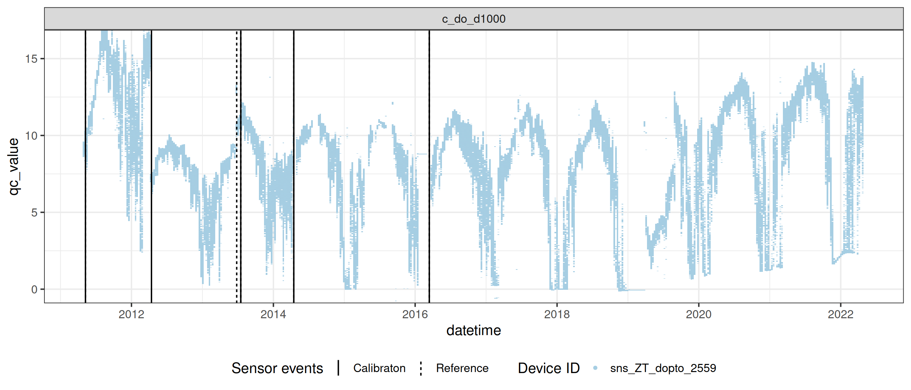
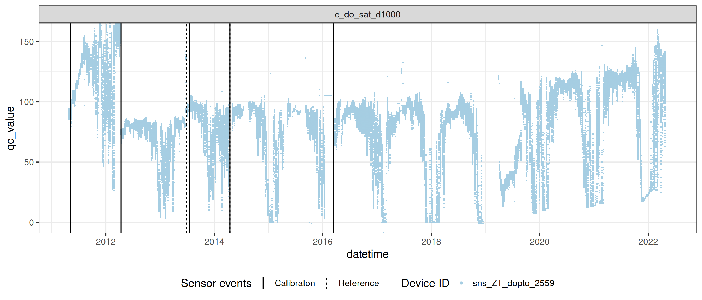
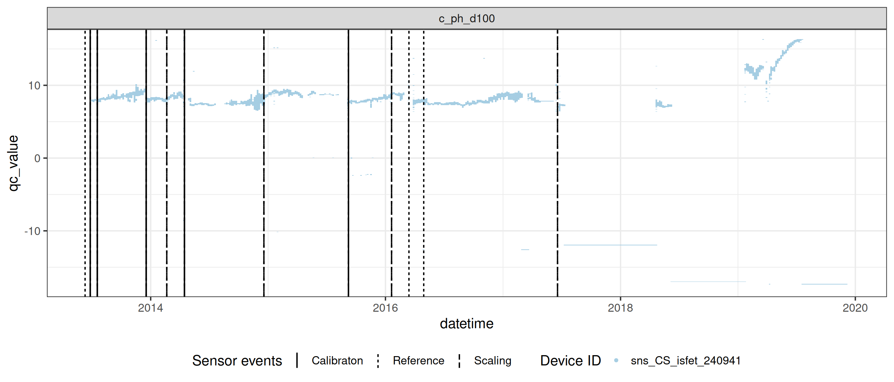
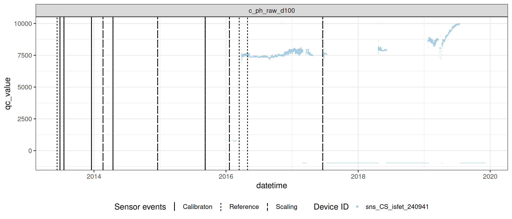
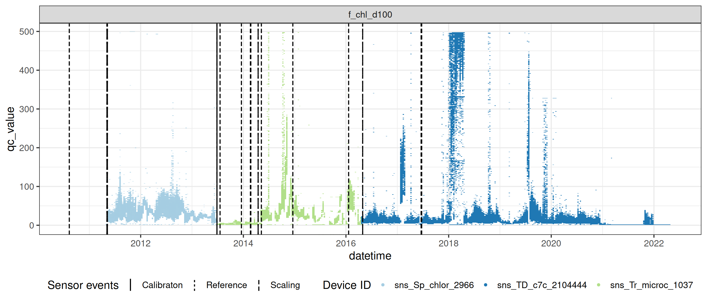
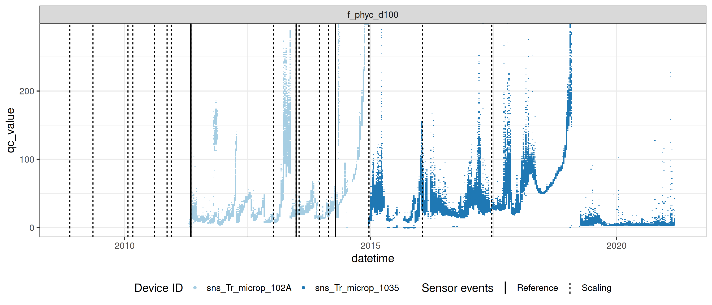
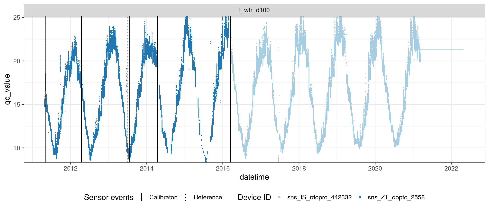
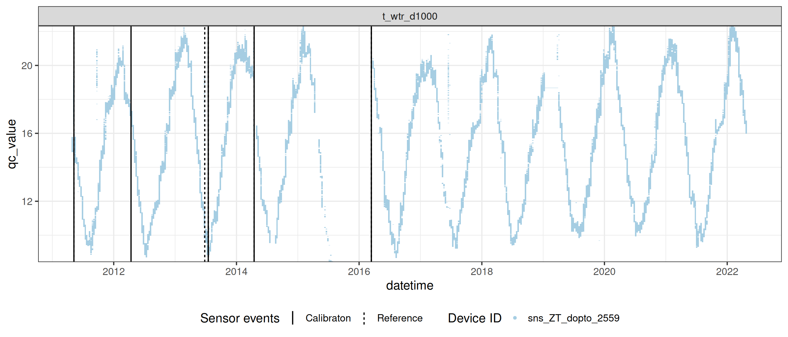

4 Meteorology
4.1 Solar radiation
Plot clear-sky solar radiation against measured solar radiation. Here, we plot the clearest day of each month. The clear-sky radiation is calculated using the MeTo package. The clear-sky radiation is calculated using the Rso function, which calculates the clear-sky solar radiation for a given date and time, latitude, longitude, and elevation. This is to assess if there is any drift in the measurement.
Throughout the years, the sensor readings are consistent.
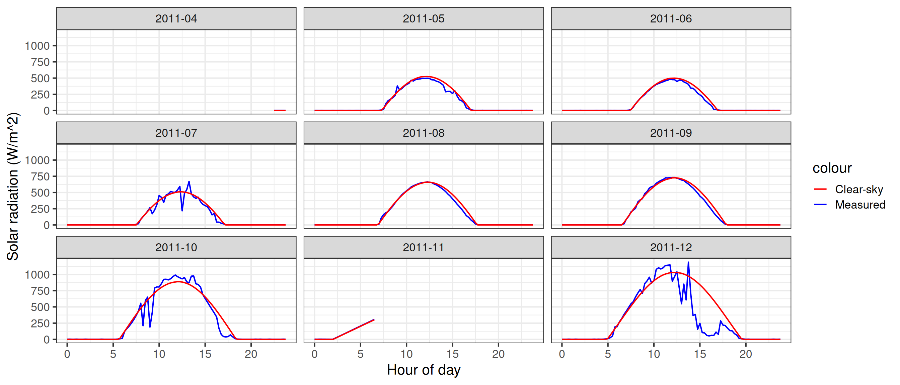
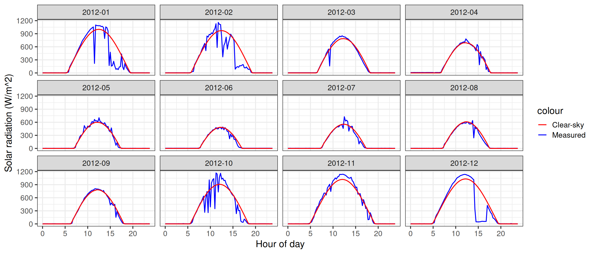
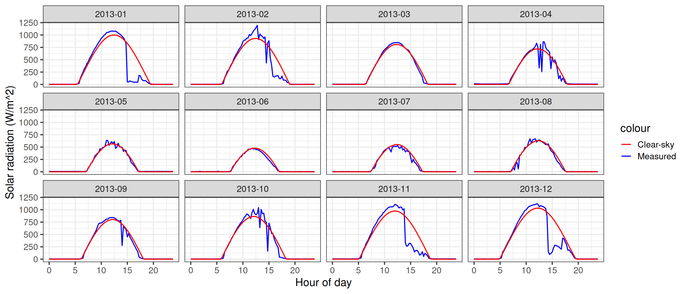
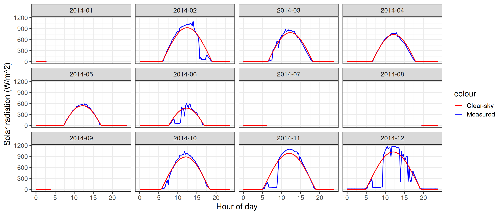
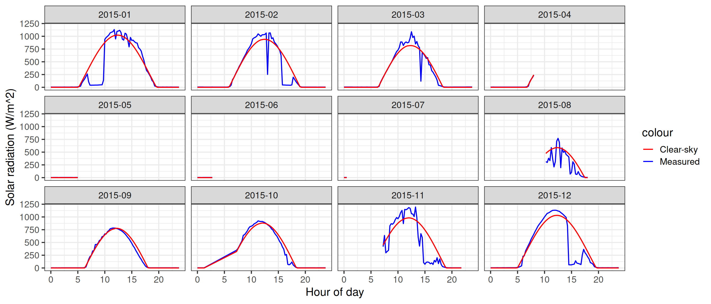
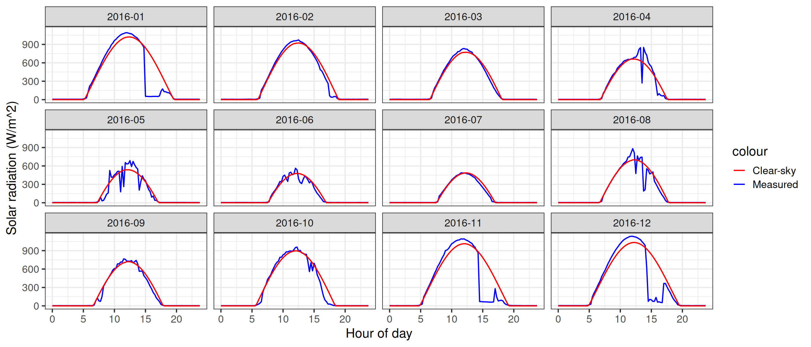
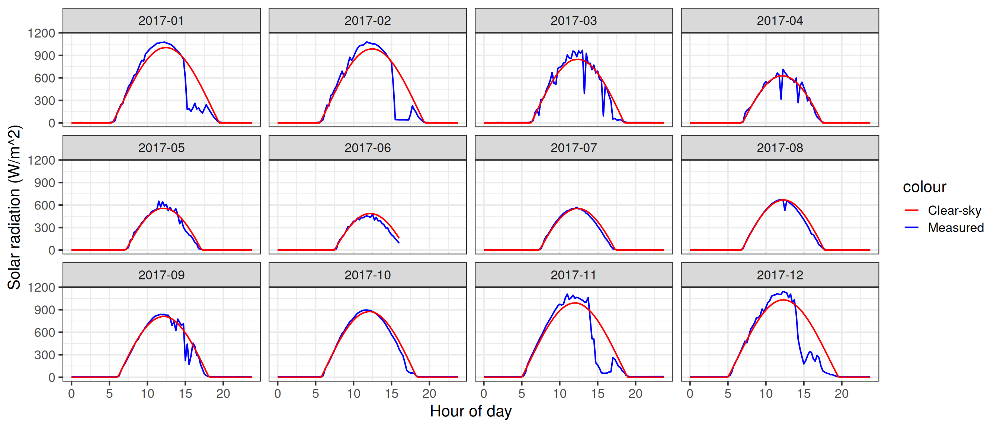
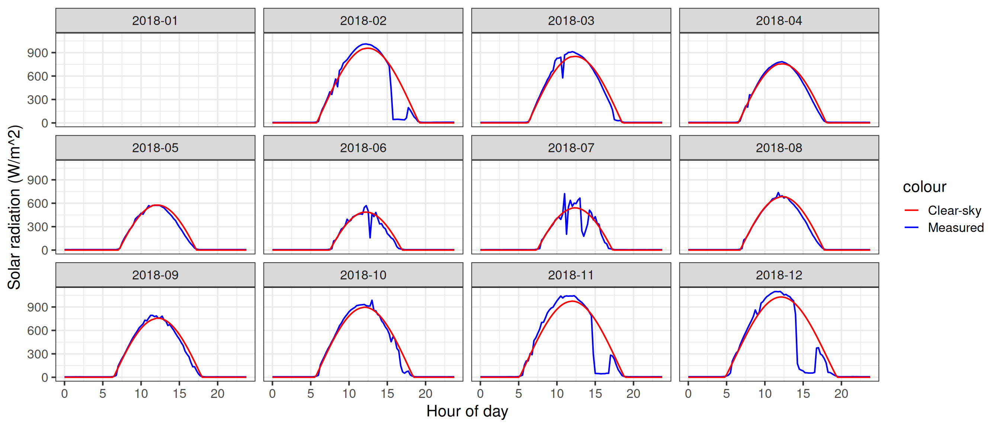
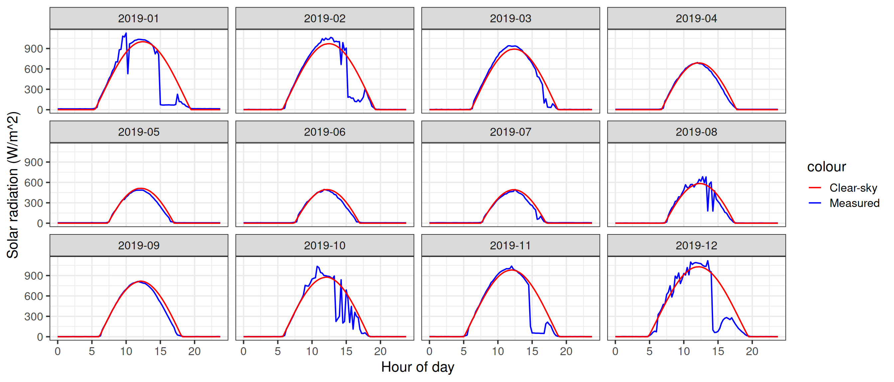
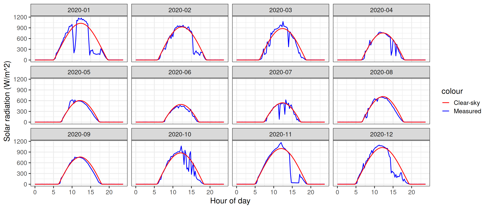
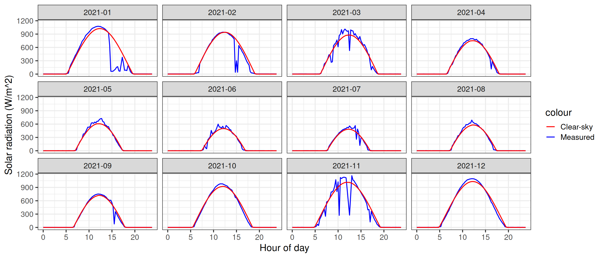
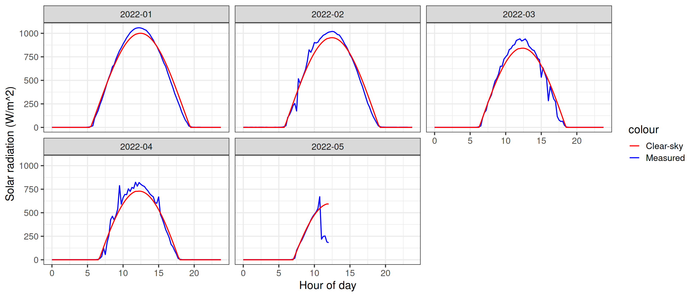
4.2 Relative humidity drift
Over the entire period, the relative humidity sensor appears to have drifted in the middle of the time period.
raw_long_device |>
filter(var_ref_id == "h_rh_h150") |>
summary() site datetime device_id
Length:386449 Min. :2011-04-27 01:00:00 Length:386449
Class :character 1st Qu.:2014-01-27 10:00:00 Class :character
Mode :character Median :2016-10-29 19:00:00 Mode :character
Mean :2016-10-29 19:00:00
3rd Qu.:2019-08-02 04:00:00
Max. :2022-05-04 13:00:00
var_abbr var_ref_id raw_value qc_value
Length:386449 Length:386449 Min. : 0.00 Min. : 0.00
Class :character Class :character 1st Qu.:69.00 1st Qu.:69.00
Mode :character Mode :character Median :78.00 Median :78.00
Mean :76.59 Mean :76.59
3rd Qu.:87.00 3rd Qu.:87.00
Max. :98.00 Max. :98.00
NA's :29956 NA's :29956
qc_flag qc_code
Length:386449 Length:386449
Class :character Class :character
Mode :character Mode :character
plot_sensor(data = raw_long_device, var_ref_id = "h_rh_h150",
sensor_calibrations = sensor_calibrations,
sensor_reference = sensor_reference,
sensor_scaling = sensor_scaling)However, when we plot each year separately, the sensor drift is not so clear.
plot_var_doy(raw_long_device, "h_rh_h150", FUN = median) +
geom_hline(yintercept = 100, linetype = "dashed", color = "grey")
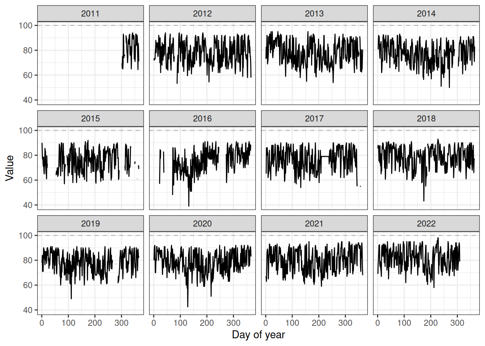
5 Quality control
We used a set of quality control codes to assess the quality of the data. The codes are from the National Environmental Monitoring Standards (NEMS). The codes are as follows:
qc_codes <- c("Missing Record" = "QC 100",
"No Quality or Non Verified" = "QC 200",
"Synthetic" = "QC 300",
"Poor Quality" = "QC 400",
"Fair Quality" = "QC 500",
"Good Quality" = "QC 600")
qc_code_col_scale = c(
"QC 100" = "#FF0000",
"QC 200" = "#8B5A00",
"QC 300" = "#D3D3D3",
"QC 400" = "#FFA500",
"QC 500" = "#00BFFF",
"QC 600" = "#006400"
)
qc_df <- data.frame(
qc_code = qc_codes,
qc_zone = names(qc_codes),
qc_code_col = unname(qc_code_col_scale),
stringsAsFactors = FALSE
)
qc_df |>
datatable(rownames = FALSE,
options = list(
pageLength = 6,
dom = "t",
columnDefs = list(list(className = 'dt-center', targets = "_all"))
)
) |>
formatStyle(
'qc_code_col',
target = 'row',
backgroundColor = styleEqual(qc_code_col_scale, qc_code_col_scale)
)However, currently NEMS does not have a classification for chlorophyll-a fluorescence or phycocyanin fluorescence sensors. We have therefore adapted the NEMS quality control codes to include these sensors, using similar checks and adjustments described in the Processing of Environmental Time-series Data (v1.2.0, August 2024) document.
6 pH standardisation
To standardise the pH data, we apply a sensor scaling based on reference pH measurements of 4, 7, and 10. The pH sensor is a ISFET sensor, which is a type of pH sensor that uses a field-effect transistor (FET) to measure the pH of a solution.
We use the raw pH signal which is a value between 0 and 1000. The pH sensor is then mapped onto the reference points and corrected for drift.
Drift corrected pH values
ph_raw <- ph_count |>
filter(var_abbr %in% c("c_ph_raw")) |>
mutate(new_val = qc_value) |>
select(datetime, new_val)
ph <- ph_count |>
filter(var_abbr %in% c("c_ph")) |>
left_join(ph_raw, by = "datetime") |>
mutate(
qc_value = case_when(
is.na(qc_value) ~ new_val, .default = qc_value
)
)
ph_dc <- ph #ph_count |>
# filter(!is.na(qc_value) & !duplicated(datetime)) |>
# mutate(var_ref_id = "c_ph_d100", var_abbr = "c_ph")
any(duplicated(ph_dc$datetime))[1] FALSEdata <- ph_dc
ph_dc <- ph_dc |>
# update_qc_code(var_ref_id = "c_ph_d100",
# date_range = c("2017-07-13", "2022-05-05"),
# qc_code = "QC 200") |>
adjust_linear_drift(var_ref_id = "c_ph_d100", sensor_refs = sensor_refs) |>
apply_adjustment(var_ref_id = "c_ph_d100",
# date_range = c("2013-07-19", "2017-07-13"),
FUN = \(x) ifelse(x <= 5 | x >= 10, NA, x)) |>
mutate(
qc_code = case_when(
is.na(raw_value) ~ "QC 100",
is.na(qc_value) ~ "QC 200",
.default = qc_code
)
) |>
update_qc_code(var_ref_id = "c_ph_d100",
date_range = c("2014-05-06 23:21:10", "2014-12-19 15:48:58"),
filter_type = "date",
qc_code = "QC 200")
summary(ph_dc) datetime var_ref_id site
Min. :2013-06-30 00:00:00 Length:226130 Length:226130
1st Qu.:2015-02-08 21:03:45 Class :character Class :character
Median :2016-09-19 18:07:30 Mode :character Mode :character
Mean :2016-09-19 18:07:30
3rd Qu.:2018-05-01 15:11:15
Max. :2019-12-11 12:15:00
device_id var_abbr raw_value qc_value
Length:226130 Length:226130 Min. :-17.430 Min. :5.415
Class :character Class :character 1st Qu.:-12.000 1st Qu.:7.426
Mode :character Mode :character Median : 7.590 Median :7.823
Mean : 0.996 Mean :7.831
3rd Qu.: 8.400 3rd Qu.:8.109
Max. :327.670 Max. :9.950
NA's :26609 NA's :131825
qc_flag qc_code
Length:226130 Length:226130
Class :character Class :character
Mode :character Mode :character
ph_dc |>
group_by(qc_code) |>
summarise(min = min(qc_value, na.rm = TRUE),
mean_v = mean(raw_value, na.rm = TRUE),
mean = mean(qc_value, na.rm = TRUE),
max = max(qc_value, na.rm = TRUE),
n = n()
)# A tibble: 3 × 6
qc_code min mean_v mean max n
<chr> <dbl> <dbl> <dbl> <dbl> <int>
1 QC 100 Inf NaN NaN -Inf 22474
2 QC 200 Inf -5.45 NaN -Inf 109351
3 QC 300 5.42 8.19 7.83 9.95 94305# viz_data(data = ph_dc, variable = "var_ref_id",
# site_events = site_events)
#
# plotly_data(ph_dc, y1 = "c_ph_d100", sub = 20)
ph_orig <- raw_long_device |>
filter(var_abbr %in% c( "c_ph")) |>
mutate(
raw_value = case_when(
# datetime > as_datetime("2019-04-01") &
# var_ref_id == "c_ph_raw_d100" ~ NA,
datetime > as_datetime("2017-07-13") &
var_ref_id == "c_ph_d100" ~ NA,
.default = raw_value
)
) |>
filter(!is.na(raw_value))
# plotly_data(data = ph_dc, y1 = "drift_correct", sub = 20)
ggplot() +
geom_point(data = ph_orig, aes(datetime, raw_value, colour = "Original"),
size = 0.2) +
geom_point(data = ph_dc, aes(datetime, qc_value,
colour = "Drift corrected"), size = 0.2) +
coord_cartesian(ylim = c(5, 10)) +
theme_bw()
# viz_data(data = ph_dc, variable = "var_ref_id",
# site_events = site_events)6.1 Basic QC - filters
- Filter extreme outliers (order of magnitude plus)
- Filter repetitions/stuck values (careful genuine repeats e.g., rainfall == 0)
- Remove data for any periods where buoy was clearly out of the water (see notes or visual check of data)
raw_long_device_filt <- apply_filters(raw_long_device2, filters = qc_filters)plot_flag_ts(raw_long_device_filt)
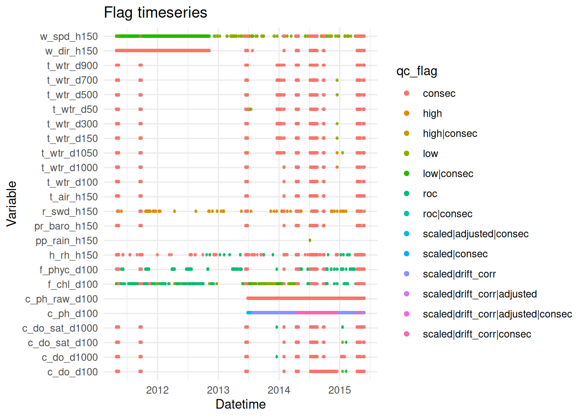
6.2 Check when the buoy was out of the water
raw_long_device_filt <- raw_long_device_filt |>
remove_buoy_out(site_events = site_events)
raw_long_device_filt |>
filter(var_ref_id == "c_ph_d100") # A tibble: 226,130 × 9
datetime var_ref_id site device_id var_abbr raw_value qc_value
<dttm> <chr> <chr> <chr> <chr> <dbl> <dbl>
1 2013-06-30 00:00:00 c_ph_d100 f_Rotoe… sns_CS_i… c_ph NaN NA
2 2013-06-30 00:15:00 c_ph_d100 f_Rotoe… sns_CS_i… c_ph NaN NA
3 2013-06-30 00:30:00 c_ph_d100 f_Rotoe… sns_CS_i… c_ph NaN NA
4 2013-06-30 00:45:00 c_ph_d100 f_Rotoe… sns_CS_i… c_ph NaN NA
5 2013-06-30 01:00:00 c_ph_d100 f_Rotoe… sns_CS_i… c_ph NaN NA
6 2013-06-30 01:15:00 c_ph_d100 f_Rotoe… sns_CS_i… c_ph NaN NA
7 2013-06-30 01:30:00 c_ph_d100 f_Rotoe… sns_CS_i… c_ph NaN NA
8 2013-06-30 01:45:00 c_ph_d100 f_Rotoe… sns_CS_i… c_ph NaN NA
9 2013-06-30 02:00:00 c_ph_d100 f_Rotoe… sns_CS_i… c_ph NaN NA
10 2013-06-30 02:15:00 c_ph_d100 f_Rotoe… sns_CS_i… c_ph NaN NA
# ℹ 226,120 more rows
# ℹ 2 more variables: qc_flag <chr>, qc_code <chr># plot_qc_data(data = raw_long_device_filt)7 Fluorescence sensors
Chlorophyll and phycocyanin flurorescence sensors currently do not have a NEMS classification. We will apply quality control methods to these data and will use the same QC codes as other variables.
fluor_df <- raw_long_device_filt |>
filter(var_abbr %in% c("f_chl", "f_phyc")) |>
apply_adjustment("f_chl_d100",
FUN = \(x) ifelse(x <= 1, NA, x)) |>
apply_adjustment("f_chl_d100",
FUN = \(x) ifelse(x >= 499, NA, x))
# viz_data(data = fluor_df, var_abbr = "var_ref_id",
# site_events = site_events,
# raw_value = "qc_value")
fluor_sensors <- sensor_map |>
filter(device_id %in% fluor_df$device_id) |>
select(device_id, var_ref_id, date_from, date_to)
sensor_refs <- sensor_reference |>
left_join(fluor_sensors, by = "device_id") |>
filter(device_id %in% fluor_sensors$device_id,
!is.na(value_actual)
# date > "2013-06-28",
# value_actual %in% c(4, 7, 10),
# units_sensor == "counts"
)
sensor_scales <- sensor_scaling |>
arrange(date) |>
filter(device_id %in% fluor_sensors$device_id)
plot_sensor(data = fluor_df, var_ref_id = c("f_chl_d100"),#, "f_phyc_d100"),
sensor_calibrations = sensor_calibrations,
sensor_reference = sensor_reference,
sensor_scaling = sensor_scaling, clip_ylim = T)
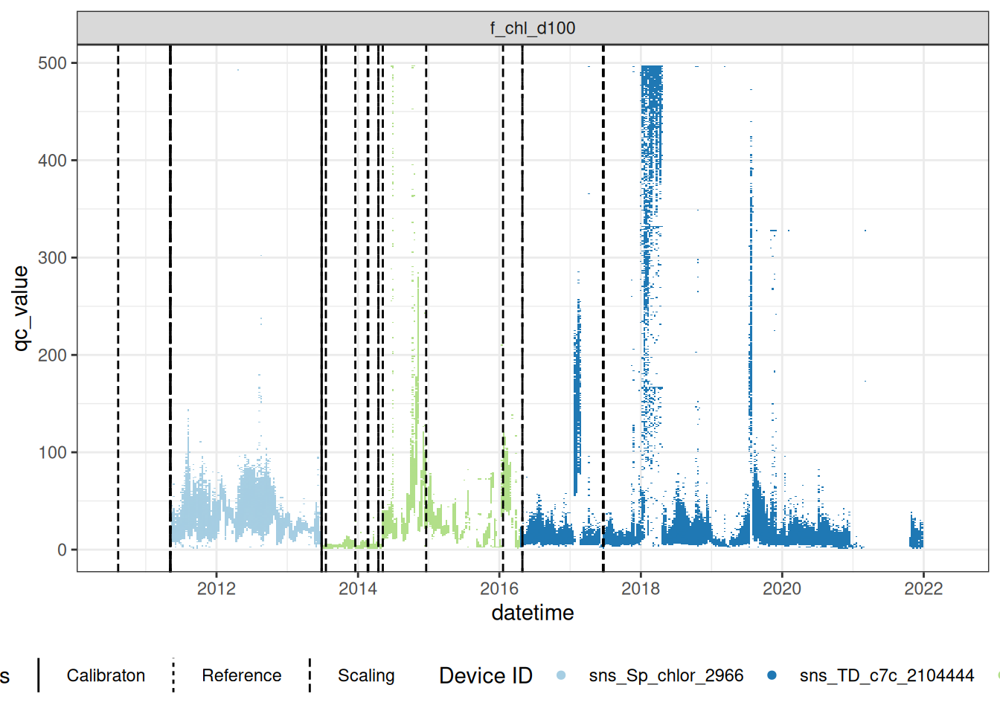
Correct fluorescence data by removing bad data and applying corrections to get the chlorophyll at it its raw 0-5V raw signal, then recorrecting to get the corrected chlorophyll value inrelative fluorescene units (RFU).
raw_chl <- fluor_df |>
filter(var_ref_id == "f_chl_d100")
sensor_scales <- sensor_scaling |>
filter(device_id %in% raw_chl$device_id) |>
select(device_id, date, offset, multiplier, range)
raw_v <- raw_chl |>
left_join(sensor_scales, by = c("device_id", "datetime" = "date")) |>
tidyr::fill(offset, multiplier, .direction = "down") |>
filter(!duplicated(datetime)) |>
mutate(qc_value = (raw_value - offset) / multiplier, var_ref_id = "f_chl_d100_raw_V") |>
apply_adjustment("f_chl_d100_raw_V",
FUN = \(x) ifelse(x > 50, NA, x)) |>
apply_adjustment("f_chl_d100_raw_V",
FUN = \(x) ifelse(x <= 0, NA, x)) |>
apply_adjustment("f_chl_d100_raw_V",
date_range = c("2020-11-26 03:17:12", "2022-07-15 20:27:09"),
FUN = \(x) NA, qc_flag = "bad_data") |>
apply_adjustment("f_chl_d100_raw_V",
date_range = c("2014-05-09 15:07:28", "2022-07-15 20:27:09"),
FUN = \(x) x / 10, qc_flag = "further_adj"
) |>
apply_adjustment("f_chl_d100_raw_V",
date_range = c("2019-07-25 14:25:22", "2019-08-05 09:04:22"),
FUN = \(x) x / 10, qc_flag = "further_adj"
) |>
apply_adjustment("f_chl_d100_raw_V",
date_range = c("2013-06-27 22:03:49", "2013-07-08 05:04:59"),
FUN = \(x) x * 10, qc_flag = "further_adj"
) |>
update_qc_code(var_ref_id = "f_chl_d100_raw_V", date_range = c("2018-01-03 08:47:32", "2018-04-24 20:03:15"),
value_range = c(-0.22, 5.04), filter_type = "both", qc_code = "QC 200") |>
update_qc_code(var_ref_id = "f_chl_d100_raw_V", date_range = c("2017-01-24 04:34:09", "2017-02-24 23:57:37"),
value_range = c(0.48, 2.97), filter_type = "both", qc_code = "QC 200") |>
update_qc_code(var_ref_id = "f_chl_d100_raw_V", date_range = c("2014-06-28 20:17:05", "2014-07-02 19:36:49"),
value_range = c(-0.12, 5.04), filter_type = "both", qc_code = "QC 200") |>
update_qc_code(var_ref_id = "f_chl_d100_raw_V", date_range = c("2014-10-09 03:49:39", "2014-11-13 11:39:50"),
value_range = c(-0.25, 5.08), filter_type = "both", qc_code = "QC 200") |>
update_qc_code(var_ref_id = "f_chl_d100_raw_V", date_range = c("2014-10-05 05:37:25", "2014-10-15 12:20:54"),
value_range = c(1.4, 4.21), filter_type = "both", qc_code = "QC 200") |>
update_qc_code(var_ref_id = "f_chl_d100_raw_V", date_range = c("2014-12-19 03:09:26", "2014-12-20 08:02:28"),
value_range = c(-0.03, 2.64), filter_type = "both", qc_code = "QC 200") |>
update_qc_code(var_ref_id = "f_chl_d100_raw_V", date_range = c("2014-12-18 13:54:01", "2014-12-19 13:14:50"),
value_range = c(0.73, 0.83), filter_type = "both", qc_code = "QC 200") |>
update_qc_code(var_ref_id = "f_chl_d100_raw_V", date_range = c("2017-04-14 00:41:32", "2017-04-17 07:36:41"),
value_range = c(-0.2, 5.01), filter_type = "both", qc_code = "QC 200") |>
update_qc_code(var_ref_id = "f_chl_d100_raw_V", date_range = c("2018-10-18 13:30:07", "2018-11-01 17:04:12"),
value_range = c(-0.15, 5.04), filter_type = "both", qc_code = "QC 200") |>
update_qc_code(var_ref_id = "f_chl_d100_raw_V", date_range = c("2019-11-06 19:19:35", "2019-12-12 04:23:34"),
value_range = c(0.01, 3.37), filter_type = "both", qc_code = "QC 200") |>
update_qc_code(var_ref_id = "f_chl_d100_raw_V", date_range = c("2014-06-19 01:08:11", "2015-08-19 05:39:13"),
value_range = c(-0.02, 0.04), filter_type = "both", qc_code = "QC 200") |>
update_qc_code(var_ref_id = "f_chl_d100_raw_V", date_range = c("2011-05-01 21:37:56", "2013-06-24 14:31:56"),
value_range = c(-0.06, 0.06), filter_type = "both", qc_code = "QC 200") |>
update_qc_code(var_ref_id = "f_chl_d100_raw_V", date_range = c("2016-06-11 05:17:20", "2016-08-19 20:23:26"),
value_range = c(-0.02, 0.03), filter_type = "both", qc_code = "QC 200") |>
update_qc_code(var_ref_id = "f_chl_d100_raw_V", date_range = c("2018-04-23 07:17:40", "2019-12-20 03:49:08"),
value_range = c(0, 0.02), filter_type = "both", qc_code = "QC 200")
# Check for duplicates
# raw_v |>
# group_by(datetime, var_ref_id) |>
# summarise(n = n()) |>
# filter(n > 1)
chla_corr <- raw_v |>
update_qc_code(var_ref_id = "f_chl_d100_raw_V", date_range = c("2013-06-25 21:22:59", "2013-10-23 01:19:33"),
value_range = c(-0.01, 0.49), filter_type = "both", qc_code = "QC 400") |>
update_qc_code(var_ref_id = "f_chl_d100_raw_V", date_range = c("2016-01-01 08:39:06", "2016-04-24 01:40:14"), filter_type = "date", qc_code = "QC 400") |>
update_qc_code(var_ref_id = "f_chl_d100_raw_V", date_range = c("2013-07-22 00:32:02", "2016-02-08 21:51:17"), filter_type = "date", qc_code = "QC 400") |>
update_qc_code(var_ref_id = "f_chl_d100_raw_V", date_range = c("2012-10-21 19:16:36", "2013-06-26 16:29:14"), filter_type = "date", qc_code = "QC 400") |>
update_qc_code(var_ref_id = "f_chl_d100_raw_V", date_range = c("2011-04-29 08:14:38", "2012-10-20 20:55:56"), filter_type = "date", qc_code = "QC 500") |>
update_qc_code(var_ref_id = "f_chl_d100_raw_V", date_range = c("2012-10-20 16:39:51", "2012-10-21 19:47:21"), filter_type = "date", qc_code = "QC 500") |>
update_qc_code(var_ref_id = "f_chl_d100_raw_V", date_range = c("2016-04-22 12:49:32", "2021-01-16 18:23:49"), filter_type = "date", qc_code = "QC 600") |>
mutate(qc_value = qc_value * 10,
var_ref_id = "f_chl_d100"
)
chla_corr |>
plot_sensor(var_ref_id = "f_chl_d100",
sensor_calibrations = sensor_calibrations,
sensor_reference = sensor_reference,
sensor_scaling = sensor_scaling, clip_ylim = FALSE, colour = "qc_code")
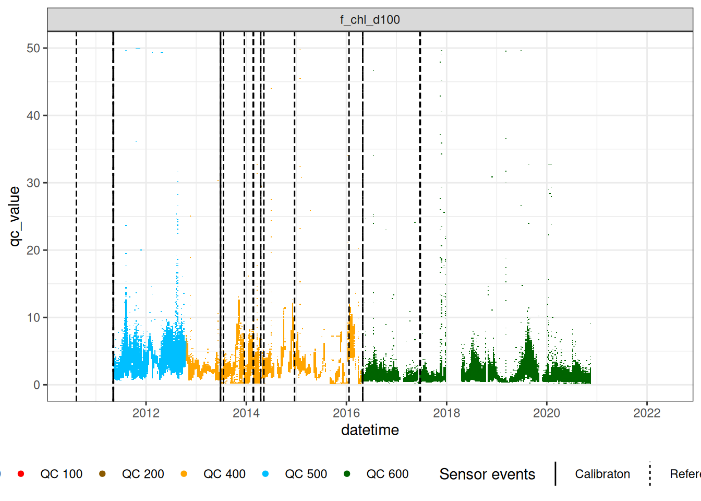
7.1 Load in field measurements
Compare field measurements to sensor data.
field <- read_csv("data-raw/rotoehu_field_data.csv") |>
mutate(Date2 = as.Date(Date))
chla <- field |>
filter(grepl("Chla", Parameter))
ref_times <- raw_long_device_filt |>
filter(var_abbr %in% c("r_swd")) |>
filter(as.Date(datetime) %in% as.Date(chla$Date),
qc_value < 10
)
sub_sensor <- raw_v |>
mutate(Date = as.Date(datetime)) |>
filter(datetime %in% ref_times$datetime) |>
group_by(Date, device_id) |>
summarise(qc_value = mean(qc_value, na.rm = TRUE),
median = median(qc_value, na.rm = TRUE))
df <- sub_sensor |>
left_join(chla, by = c("Date" = "Date2")) |>
mutate(year = year(Date))
ggplot() +
geom_point(data = df, aes(qc_value, Value, colour = LocationName)) +
geom_smooth(data = df, aes(qc_value, Value), method = "lm") +
facet_wrap(year~device_id) +
labs(x = "Sensor value (Volts)",
y = "Field value (ug/L)") +
coord_cartesian(ylim = c(0, 50)) +
theme_bw()Repeat similar procedure to phycocyanin data.
phyc_corr <- fluor_df |>
filter(var_ref_id == "f_phyc_d100") |>
update_qc_code(var_ref_id = "f_phyc_d100", date_range = c("2011-02-27 11:04:02", "2017-08-01 08:14:13"),
value_range = c(-0.03, 0.87), filter_type = "both", qc_code = "QC 200") |>
apply_adjustment("f_phyc_d100",
FUN = \(x) x / 60) |>
apply_adjustment("f_phyc_d100",
date_range = c("2014-05-09 14:45:08", "2014-05-19 09:07:38"),
FUN = \(x) x / 10) |>
# apply_adjustment("f_phyc_d100",
# date_range = c("2019-04-03 23:43:10", "2021-03-26 23:43:46"),
# FUN = \(x) x * 10) |>
update_qc_code(var_ref_id = "f_phyc_d100",
date_range = c("2018-05-17 09:27:00", "2019-04-07 01:22:07"),
filter_type = "date", qc_code = "QC 200") |>
update_qc_code(var_ref_id = "f_phyc_d100",
date_range = c("2014-02-02 15:10:07", "2014-12-20 04:29:04"),
filter_type = "date", qc_code = "QC 200") |>
update_qc_code(var_ref_id = "f_phyc_d100", date_range = c("2011-10-19 05:22:15", "2011-11-22 00:23:52"),
value_range = c(1.38, 3.16), filter_type = "both", qc_code = "QC 200") |>
update_qc_code(var_ref_id = "f_phyc_d100", date_range = c("2012-03-13 07:02:29", "2012-04-13 18:45:49"),
value_range = c(0.46, 2.48), filter_type = "both", qc_code = "QC 200") |>
update_qc_code(var_ref_id = "f_phyc_d100", date_range = c("2013-01-17 14:53:10", "2013-05-22 05:52:56"), filter_type = "date", qc_code = "QC 400") |>
# update_qc_code(var_ref_id = "f_phyc_d100", date_range = c("2019-06-14 17:06:29", "2021-12-04 22:56:49"),
# value_range = c(2.01, 5.67), filter_type = "both", qc_code = "QC 200") |>
update_qc_code(var_ref_id = "f_phyc_d100", date_range = c("2021-03-19 11:54:31", "2022-05-10 23:01:04"), filter_type = "date", qc_code = "QC 200") |>
update_qc_code(var_ref_id = "f_phyc_d100", date_range = c("2013-05-11 17:44:58", "2014-03-04 23:49:40"), filter_type = "date", qc_code = "QC 400") |>
update_qc_code(var_ref_id = "f_phyc_d100", date_range = c("2011-04-16 03:07:49", "2013-01-18 07:10:30"), filter_type = "date", qc_code = "QC 500") |>
update_qc_code(var_ref_id = "f_phyc_d100", date_range = c("2014-11-02 19:53:11", "2018-07-01 20:04:22"), filter_type = "date", qc_code = "QC 500") |>
update_qc_code(var_ref_id = "f_phyc_d100", date_range = c("2019-03-19 21:31:56", "2021-08-12 23:22:26"), filter_type = "date", qc_code = "QC 400") |>
mutate(qc_value = qc_value * 60)
phyc_corr |>
plot_sensor(var_ref_id = "f_phyc_d100",
sensor_calibrations = sensor_calibrations,
sensor_reference = sensor_reference,
sensor_scaling = sensor_scaling,
clip_ylim = FALSE, colour = "qc_code")
# phyc_corr |>
# group_by(datetime, var_ref_id) |>
# summarise(n = n()) |>
# filter(n > 1)
# viz_data(data = phyc_corr, var_abbr = "var_ref_id",
# site_events = site_events,
# value = "qc_value")
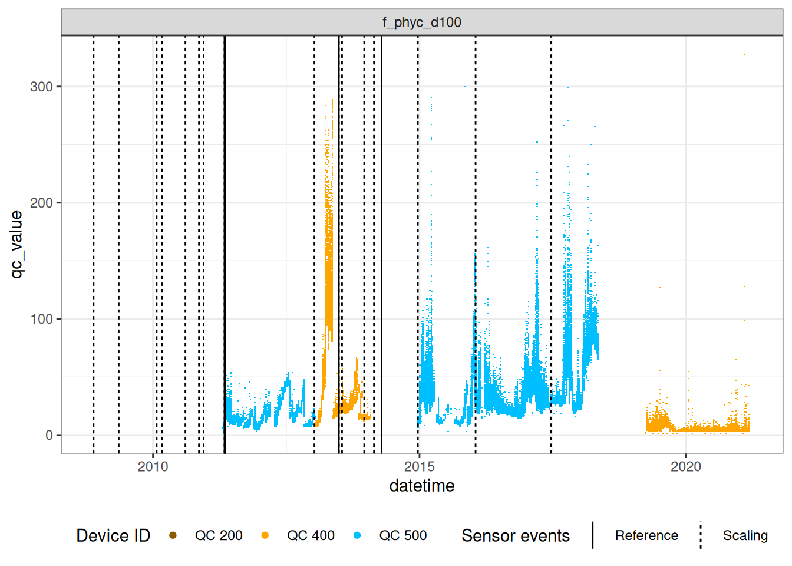
8 Oxygen sensors
Remove bad data and correct for linear drift
do_1m <- raw_long_device_filt |>
filter(var_ref_id %in% c("c_do_sat_d100"))
sensor_refs <- sensor_reference |>
filter(device_id %in% do_1m$device_id)
adj_period <- c("2016-03-14", "2020-10-27")
data = do_1m
do_1m <- do_1m |>
# remove values < 40
apply_adjustment("c_do_sat_d100", FUN = \(x) ifelse(x < 40, NA, x),
qc_flag = "bad_data") |>
adjust_linear_drift(var_ref_id = "c_do_sat_d100", sensor_refs) |>
drift_correction(var_ref_id = "c_do_sat_d100",
date_range = c("2011-05-11 12:49:09", "2011-08-14 02:06:44"),
low = c(0, 0, 0), high = c(100, 100, 132)
) |>
drift_correction(var_ref_id = "c_do_sat_d100",
date_range = c("2011-08-14 02:07:44", "2012-04-13 12:25:24"),
low = c(0, 0, 0), high = c(100, 130, 130)
) |>
drift_correction(var_ref_id = "c_do_sat_d100",
date_range = c("2014-10-01 20:19:51", "2014-12-19 20:30:53"),
low = c(0, 0, 0), high = c(100, 98, 93),
) |>
drift_correction(var_ref_id = "c_do_sat_d100",
date_range = c("2014-12-19 08:58:41", "2015-01-22 00:12:35"),
low = c(0, 0, 0), high = c(100, 132, 147),
) |>
drift_correction(var_ref_id = "c_do_sat_d100",
date_range = c("2015-01-22 00:12:35", "2015-04-11 11:05:20"),
low = c(0, 0, 0), high = c(100, 120, 121),
) |>
drift_correction(var_ref_id = "c_do_sat_d100",
date_range = c("2015-05-07 21:02:55", "2015-08-09 09:12:29"),
low = c(0, 0, 0), high = c(100, 120, 121),
) |>
drift_correction(var_ref_id = "c_do_sat_d100",
date_range = c("2015-09-07 23:28:42", "2016-03-10 11:36:33"),
low = c(0, 0, 0), high = c(100, 150, 140),
) |>
drift_correction(var_ref_id = "c_do_sat_d100",
date_range = c("2019-04-12 00:41:04", "2019-05-09 13:46:04"),
low = c(0, 0, 0), high = c(100, 88, 84.5),
) |>
drift_correction(var_ref_id = "c_do_sat_d100",
date_range = c("2019-05-09 13:47:04", "2019-09-06 08:41:58"),
low = c(0, 0, 0), high = c(100, 83.5, 122),
) |>
drift_correction(var_ref_id = "c_do_sat_d100",
date_range = c( "2019-09-06 08:41:58", "2019-10-27 07:25:54"),
low = c(0, 0, 0), high = c(100, 114.5, 97),
) |>
drift_correction(var_ref_id = "c_do_sat_d100",
date_range = c("2019-12-03 21:14:01", "2020-07-10 01:32:05"),
low = c(0, 0, 0), high = c(100, 114.5, 116),
) |>
drift_correction(var_ref_id = "c_do_sat_d100",
date_range = c("2020-07-07 08:39:15", "2020-10-30 23:41:58"),
low = c(0, 0, 0), high = c(100, 118, 118),
) |>
update_qc_code(var_ref_id = "c_do_sat_d100",
date_range = c("2011-04-27 22:32:21", "2011-05-08 23:55:29"),
filter_type = "date", qc_code = "QC 400") |>
update_qc_code(var_ref_id = "c_do_sat_d100",
date_range = c("2018-08-17 01:20:07", "2019-04-01 16:45:20"),
filter_type = "date", qc_code = "QC 400") |>
update_qc_code(var_ref_id = "c_do_sat_d100",
date_range = c("2014-07-31 03:35:30", "2016-05-27 21:37:04"),
filter_type = "date", qc_code = "QC 400") |>
update_qc_code(var_ref_id = "c_do_sat_d100",
date_range = c("2017-06-29 04:19:13", "2018-08-17 01:22:23"),
filter_type = "date", qc_code = "QC 500")
# adjust_drift_quantiles(var_ref_id = "c_do_sat_d100", adj_period = adj_period,
# quantiles = c(0.49, 0.51))
# viz_data(data = do_1m, variable = "var_ref_id", value = "qc_value", colour = "qc_code")
do_1m |>
# plotly_data(y1 = "c_do_sat_d100", sub = 20)
plot_sensor(var_ref_id = c("c_do_sat_d100"),
sensor_calibrations = sensor_calibrations,
sensor_reference = sensor_reference,
sensor_scaling = sensor_scaling, clip_ylim = F, colour = "qc_code") do_10m <- raw_long_device_filt |>
filter(var_ref_id %in% c("c_do_sat_d1000"))
sensor_refs <- sensor_reference |>
filter(device_id %in% do_10m$device_id)
data = do_10m
do_10m <- do_10m |>
adjust_linear_drift(var_ref_id = "c_do_sat_d1000", sensor_refs) |>
drift_correction(var_ref_id = "c_do_sat_d1000",
date_range = c("2011-04-25 07:45:15", "2011-08-07 19:50:48"),
low = c(0, 0, 0), high = c(90, 98, 170),
) |>
drift_correction(var_ref_id = "c_do_sat_d1000",
date_range = c("2011-08-07 19:51:48", "2012-04-13 12:28:51"),
low = c(0, 0, 0), high = c(90, 150, 175),
) |>
drift_correction(var_ref_id = "c_do_sat_d1000",
date_range = c("2012-04-13 13:05:23", "2013-06-26 02:40:50"),
low = c(0, 0, 0), high = c(90, 80, 83),
) |>
drift_correction(var_ref_id = "c_do_sat_d1000",
date_range = c("2016-03-19 10:11:14", "2017-06-11 15:03:43"),
low = c(0, 0, -5), high = c(90, 98, 96),
) |>
update_qc_code(var_ref_id = "c_do_sat_d1000",
date_range = c("2019-01-17 06:45:21", "2019-09-06 00:30:35"),
filter_type = "date", qc_code = "QC 200") |>
drift_correction(var_ref_id = "c_do_sat_d1000",
date_range = c("2019-08-24 18:29:28", "2022-06-01 07:33:10"),
low = c(0, 6.5, 25), high = c(100, 109, 139),
) |>
update_qc_code(var_ref_id = "c_do_sat_d1000",
date_range = c("2017-06-25 08:18:18", "2019-01-19 22:05:08"),
filter_type = "date", qc_code = "QC 600") |>
apply_adjustment("c_do_sat_d1000", FUN = \(x) ifelse(x < 0, NA, x),
qc_flag = "bad_data") |>
update_qc_code(var_ref_id = "c_do_sat_d1000",
date_range = c("2011-02-04 20:25:02", "2022-03-24 22:52:05"),
value_range = c(109.23, 210),
filter_type = "both", qc_code = "QC 200")
# viz_data(data = do_10m, variable = "var_ref_id", value = "qc_value",
# colour = "qc_code")
do_10m |>
# plotly_data(y1 = "c_do_sat_d1000", sub = 20)
plot_sensor(var_ref_id = c("c_do_sat_d1000"),
sensor_calibrations = sensor_calibrations,
sensor_reference = sensor_reference,
sensor_scaling = sensor_scaling, clip_ylim = F, colour = "qc_code") +
geom_hline(yintercept = 0)
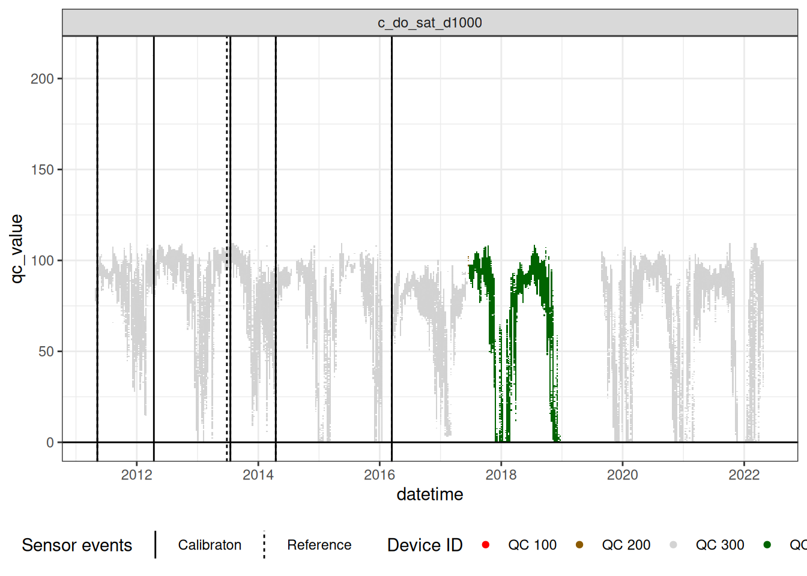
# clean temp 1m
raw_long_device_filt <- raw_long_device_filt |>
update_qc_code(var_ref_id = "t_wtr_d100",
date_range = c("2010-12-13 22:31:27", "2021-07-31 01:39:27"),
filter_type = "date", qc_code = "QC 600") |>
update_qc_code(var_ref_id = "t_wtr_d100",
date_range = c("2011-09-16 09:58:47", "2011-09-24 09:46:35"),
value_range = c(14.11, 21.25),
filter_type = "both", qc_code = "QC 200") |>
update_qc_code(var_ref_id = "t_wtr_d100",
date_range = c("2013-06-25 19:55:08", "2013-06-28 13:03:46"),
value_range = c(9.05, 19.55),
filter_type = "both", qc_code = "QC 200") |>
update_qc_code(var_ref_id = "t_wtr_d100",
date_range = c("2013-06-28 08:58:27", "2013-06-28 18:30:51"),
value_range = c(10, 10.16),
filter_type = "both", qc_code = "QC 200") |>
update_qc_code(var_ref_id = "t_wtr_d100",
date_range = c("2017-06-09 04:41:05", "2017-06-29 14:21:39"),
filter_type = "date", qc_code = "QC 200") |>
update_qc_code(var_ref_id = "t_wtr_d100",
date_range = c("2011-05-30 02:26:34", "2011-06-01 19:23:05"),
value_range = c(11.42, 13.14),
filter_type = "both", qc_code = "QC 200") |>
update_qc_code(var_ref_id = "t_wtr_d100",
date_range = c("2011-11-17 00:09:31", "2011-11-18 23:42:07"),
value_range = c(13.95, 14.38),
filter_type = "both", qc_code = "QC 200") |>
update_qc_code(var_ref_id = "t_wtr_d100",
date_range = c("2014-04-14 12:11:39", "2014-04-16 23:45:27"),
filter_type = "date", qc_code = "QC 200") |>
update_qc_code(var_ref_id = "t_wtr_d100",
date_range = c("2013-12-15 19:24:27", "2014-01-18 00:26:05"),
value_range = c(18.04, 19.71),
filter_type = "both", qc_code = "QC 200") |>
update_qc_code(var_ref_id = "t_wtr_d100",
date_range = c("2014-12-16 14:07:12", "2015-01-23 19:48:48"),
value_range = c(26.69, 33.69),
filter_type = "both", qc_code = "QC 200") |>
update_qc_code(var_ref_id = "t_wtr_d100",
date_range = c("2015-02-09 03:44:42", "2015-02-18 07:36:33"),
value_range = c(18.58, 19.35),
filter_type = "both", qc_code = "QC 200") |>
update_qc_code(var_ref_id = "t_wtr_d100",
date_range = c("2015-09-08 01:28:55", "2015-09-09 19:58:52"),
value_range = c(21.53, 22.61),
filter_type = "both", qc_code = "QC 200") |>
update_qc_code(var_ref_id = "t_wtr_d100",
date_range = c("2015-12-15 15:57:46", "2015-12-20 20:02:13"),
value_range = c(15.09, 17.53),
filter_type = "both", qc_code = "QC 200") |>
update_qc_code(var_ref_id = "t_wtr_d100",
date_range = c("2016-05-07 11:28:34", "2016-05-12 04:16:14"),
value_range = c(14.08, 14.62),
filter_type = "both", qc_code = "QC 200") |>
update_qc_code(var_ref_id = "t_wtr_d100",
date_range = c("2016-03-28 11:22:36", "2016-03-28 16:51:12"),
filter_type = "date", qc_code = "QC 200") |>
update_qc_code(var_ref_id = "t_wtr_d100",
date_range = c("2016-10-31 06:26:59", "2016-11-06 18:25:46"),
value_range = c(14.2, 15.22),
filter_type = "both", qc_code = "QC 200") |>
update_qc_code(var_ref_id = "t_wtr_d100",
date_range = c("2017-02-23 00:13:22", "2017-02-23 21:56:40"),
value_range = c(20.53, 20.95),
filter_type = "both", qc_code = "QC 200") |>
update_qc_code(var_ref_id = "t_wtr_d100",
date_range = c("2018-04-22 04:47:48", "2018-04-26 22:56:26"),
value_range = c(13.94, 15.13),
filter_type = "both", qc_code = "QC 200") |>
update_qc_code(var_ref_id = "t_wtr_d100",
date_range = c("2019-04-02 11:02:34", "2019-04-11 20:51:52"),
value_range = c(18.03, 25.59),
filter_type = "both", qc_code = "QC 500") |>
update_qc_code(var_ref_id = "t_wtr_d100",
date_range = c("2019-12-11 08:14:24", "2019-12-11 12:56:56"),
value_range = c(26.58, 26.82),
filter_type = "both", qc_code = "QC 500") |>
update_qc_code(var_ref_id = "t_wtr_d100",
date_range = c("2019-12-11 03:31:51", "2019-12-12 14:50:56"),
value_range = c(26.26, 26.84),
filter_type = "both", qc_code = "QC 200") |>
update_qc_code(var_ref_id = "t_wtr_d100",
date_range = c("2021-01-22 02:42:45", "2021-01-23 16:55:35"),
value_range = c(19.96, 20.28),
filter_type = "both", qc_code = "QC 200") |>
update_qc_code(var_ref_id = "t_wtr_d100",
date_range = c("2021-02-28 08:09:19", "2021-02-28 19:59:17"),
value_range = c(21.11, 21.64),
filter_type = "both", qc_code = "QC 200")
raw_long_device_filt |>
plot_sensor(var_ref_id = c("t_wtr_d100"),
sensor_calibrations = sensor_calibrations,
sensor_reference = sensor_reference,
sensor_scaling = sensor_scaling, clip_ylim = FALSE, colour = "qc_code")raw_long_device_filt <- raw_long_device_filt |>
update_qc_code(var_ref_id = "t_wtr_d1000",
date_range = c("2010-11-09 18:36:26", "2022-11-08 22:36:47"),
filter_type = "date", qc_code = "QC 600") |>
update_qc_code(var_ref_id = "t_wtr_d1000",
date_range = c("2011-05-31 00:53:12", "2011-05-31 20:53:55"),
value_range = c(12.48, 13.49),
filter_type = "both", qc_code = "QC 200") |>
update_qc_code(var_ref_id = "t_wtr_d1000",
date_range = c("2011-09-19 02:53:22", "2011-09-20 21:15:08"),
value_range = c(16.03, 21.38),
filter_type = "both", qc_code = "QC 200") |>
update_qc_code(var_ref_id = "t_wtr_d1000",
date_range = c("2013-06-25 00:55:43", "2013-06-28 18:44:00"),
value_range = c(16.46, 19.53),
filter_type = "both", qc_code = "QC 200") |>
update_qc_code(var_ref_id = "t_wtr_d1000",
date_range = c("2013-07-18 22:06:45", "2013-07-20 05:21:41"),
value_range = c(10.24, 10.55),
filter_type = "both", qc_code = "QC 200") |>
update_qc_code(var_ref_id = "t_wtr_d1000",
date_range = c("2013-12-18 11:08:01", "2013-12-18 12:09:06"),
value_range = c(19.47, 28.76),
filter_type = "both", qc_code = "QC 200") |>
update_qc_code(var_ref_id = "t_wtr_d1000",
date_range = c("2014-02-20 14:36:57", "2014-02-20 15:08:51"),
value_range = c(21, 22.15),
filter_type = "both", qc_code = "QC 200") |>
update_qc_code(var_ref_id = "t_wtr_d1000",
date_range = c("2014-04-14 13:00:21", "2014-04-16 15:42:49"),
value_range = c(14.98, 21.51),
filter_type = "both", qc_code = "QC 200") |>
update_qc_code(var_ref_id = "t_wtr_d1000",
date_range = c("2014-12-19 12:36:51", "2014-12-19 13:02:23"),
value_range = c(24.83, 32.3),
filter_type = "both", qc_code = "QC 200") |>
update_qc_code(var_ref_id = "t_wtr_d1000",
date_range = c("2014-12-19 09:55:26", "2014-12-19 14:53:57"),
value_range = c(18.94, 18.98),
filter_type = "both", qc_code = "QC 200") |>
update_qc_code(var_ref_id = "t_wtr_d1000",
date_range = c("2015-01-21 12:11:09", "2015-01-21 13:21:39"),
value_range = c(19.22, 25.99),
filter_type = "both", qc_code = "QC 200") |>
update_qc_code(var_ref_id = "t_wtr_d1000",
date_range = c("2016-03-11 01:11:02", "2016-03-16 07:07:01"),
value_range = c(20.31, 20.47),
filter_type = "both", qc_code = "QC 200") |>
update_qc_code(var_ref_id = "t_wtr_d1000",
date_range = c("2016-04-23 18:37:31", "2016-05-03 09:30:09"),
value_range = c(22.34, 22.86),
filter_type = "both", qc_code = "QC 200") |>
update_qc_code(var_ref_id = "t_wtr_d1000",
date_range = c("2016-03-10 04:11:42", "2016-03-17 04:06:21"),
value_range = c(20, 20.62),
filter_type = "both", qc_code = "QC 200") |>
update_qc_code(var_ref_id = "t_wtr_d1000",
date_range = c("2016-07-25 01:48:18", "2016-07-31 21:33:09"),
value_range = c(10.42, 10.73),
filter_type = "both", qc_code = "QC 200") |>
update_qc_code(var_ref_id = "t_wtr_d1000",
date_range = c("2017-03-18 07:33:48", "2017-03-23 10:22:27"),
value_range = c(26.14, 26.51),
filter_type = "both", qc_code = "QC 200") |>
update_qc_code(var_ref_id = "t_wtr_d1000",
date_range = c("2017-06-17 22:19:36", "2017-06-29 21:14:50"),
value_range = c(10.69, 22.02),
filter_type = "both", qc_code = "QC 200") |>
update_qc_code(var_ref_id = "t_wtr_d1000",
date_range = c("2017-05-06 05:46:12", "2017-05-10 05:52:41"),
value_range = c(13.77, 14.2),
filter_type = "both", qc_code = "QC 200") |>
update_qc_code(var_ref_id = "t_wtr_d1000",
date_range = c("2017-05-05 13:45:07", "2017-05-07 05:47:49"),
value_range = c(15.65, 16.02),
filter_type = "both", qc_code = "QC 200") |>
update_qc_code(var_ref_id = "t_wtr_d1000",
date_range = c("2018-04-24 14:09:06", "2018-04-24 15:08:18"),
value_range = c(14.45, 16.88),
filter_type = "both", qc_code = "QC 200") |>
update_qc_code(var_ref_id = "t_wtr_d1000",
date_range = c("2019-03-27 04:09:38", "2019-04-18 16:25:36"),
value_range = c(18.6, 25.04),
filter_type = "both", qc_code = "QC 400") |>
update_qc_code(var_ref_id = "t_wtr_d1000",
date_range = c("2019-07-25 16:03:33", "2019-07-25 17:22:50"),
value_range = c(10.29, 11.94),
filter_type = "both", qc_code = "QC 200") |>
update_qc_code(var_ref_id = "t_wtr_d1000",
date_range = c("2019-12-08 09:11:35", "2019-12-15 06:24:35"),
value_range = c(9.52, 9.87),
filter_type = "both", qc_code = "QC 200") |>
update_qc_code(var_ref_id = "t_wtr_d1000",
date_range = c("2021-02-24 03:24:47", "2021-03-04 22:52:25"),
value_range = c(22.48, 24.45),
filter_type = "both", qc_code = "QC 200")
raw_long_device_filt |>
plot_sensor(var_ref_id = c("t_wtr_d1000"),
sensor_calibrations = sensor_calibrations,
sensor_reference = sensor_reference,
sensor_scaling = sensor_scaling, clip_ylim = FALSE, colour = "qc_code")9 Recalculate DO concentrations using temperature and DO saturation
temp_1m <- raw_long_device_filt |>
filter(var_ref_id == "t_wtr_d100") |>
select(datetime, raw_value) |>
rename(temp = raw_value)
pr_baro <- raw_long_device_filt |>
filter(var_ref_id == "pr_baro_h150") |>
select(datetime, raw_value) |>
rename(pr_baro = raw_value)
do_conc2_1m <- left_join(do_1m, temp_1m, by = "datetime") |>
left_join(pr_baro, by = "datetime") |>
mutate(do_sat_mgL = calc_DOsat_mg(temp, pr_baro),
var_abbr = "c_do",
var_ref_id = "c_do2_d100",
qc_value = qc_value / 100 * do_sat_mgL
) |>
select(datetime, var_ref_id, site, device_id, var_abbr, qc_value, qc_flag)
do_conc_1m <- raw_long_device_filt |>
filter(var_ref_id == "c_do_d100") |>
select(datetime, var_ref_id, site, device_id, var_abbr, raw_value)
# viz_data(data = do_conc_1m, variable = "var_ref_id", value = "qc_value",
# colour = "device_id")
do_conc2_1m <- do_conc2_1m |>
mutate(var_ref_id = "c_do_d100") |>
select(datetime, var_ref_id, site, device_id, var_abbr, qc_value,
qc_flag)
do_conc3_1m <- left_join(do_conc_1m, do_conc2_1m, by = c("datetime", "var_ref_id", "site", "device_id", "var_abbr")) |>
mutate(
qc_code = case_when(
!is.na(qc_value) ~ "QC 300",
is.na(raw_value) ~ "QC 100",
is.na(qc_value) ~ "QC 200"
)
)
do_conc3_1m |>
filter(qc_code == "QC 100" & !is.na(qc_value)) # A tibble: 0 × 9
# ℹ 9 variables: datetime <dttm>, var_ref_id <chr>, site <chr>,
# device_id <chr>, var_abbr <chr>, raw_value <dbl>, qc_value <dbl>,
# qc_flag <chr>, qc_code <chr>temp_10m <- raw_long_device_filt |>
filter(var_ref_id == "t_wtr_d1000") |>
select(datetime, raw_value) |>
rename(temp = raw_value)
pr_baro <- raw_long_device_filt |>
filter(var_ref_id == "pr_baro_h150") |>
select(datetime, raw_value) |>
rename(pr_baro = raw_value)
do_conc2_10m <- left_join(do_10m, temp_10m, by = "datetime") |>
left_join(pr_baro, by = "datetime") |>
mutate(do_sat_mgL = calc_DOsat_mg(temp, pr_baro),
var_ref_id = "c_do2_d1000",
var_abbr = "c_do",
qc_value = qc_value / 100 * do_sat_mgL,
qc_code = "QC 300"
) |>
select(datetime, var_ref_id, site, device_id, var_abbr, qc_value, qc_code,
qc_flag)
do_conc_10m <- raw_long_device_filt |>
filter(var_ref_id == "c_do_d1000") |>
select(datetime, var_ref_id, site, device_id, var_abbr, raw_value)
# viz_data(data = do_conc_10m, variable = "var_ref_id", value = "qc_value",
# colour = "device_id")
do_conc2_10m <- do_conc2_10m |>
mutate(var_ref_id = "c_do_d1000") |>
select(datetime, var_ref_id, site, device_id, var_abbr, qc_value, qc_flag)
do_conc3_10m <- left_join(do_conc_10m, do_conc2_10m, by = c("datetime", "var_ref_id", "site", "device_id", "var_abbr")) |>
mutate(
qc_code = case_when(
!is.na(qc_value) ~ "QC 300",
is.na(raw_value) ~ "QC 100",
is.na(qc_value) ~ "QC 200"
)
)do <- bind_rows(do_1m, do_10m, do_conc3_1m, do_conc3_10m)
do |>
plot_sensor(var_ref_id = c("c_do_d100", "c_do_d1000"),
sensor_calibrations = sensor_calibrations,
sensor_reference = sensor_reference,
sensor_scaling = sensor_scaling, clip_ylim = FALSE, colour = "qc_code") 10 Assign QC codes to temperature data
temp <- raw_long_device_filt |>
filter(var_abbr == "t_wtr") |>
update_qc_code(var_ref_id = "t_wtr_d50", date_range = c("2011-05-30 13:39:11", "2011-06-01 05:03:55"),
value_range = c(10.3, 13.19), filter_type = "both", qc_code = "QC 200") |>
update_qc_code(var_ref_id = "t_wtr_d50", date_range = c("2011-09-17 04:45:27", "2011-09-22 12:53:17"),
value_range = c(17.63, 20.95), filter_type = "both", qc_code = "QC 200") |>
update_qc_code(var_ref_id = "t_wtr_d50", date_range = c("2011-11-17 05:06:21", "2011-11-19 21:10:16"),
value_range = c(15.81, 16.23), filter_type = "both", qc_code = "QC 200") |>
update_qc_code(var_ref_id = "t_wtr_d50", date_range = c("2012-04-11 15:32:32", "2012-04-15 01:54:42"),
value_range = c(14.57, 16.52), filter_type = "both", qc_code = "QC 200") |>
update_qc_code(var_ref_id = "t_wtr_d50", date_range = c("2013-01-14 23:34:50", "2013-01-20 07:28:46"),
value_range = c(19.38, 19.95), filter_type = "both", qc_code = "QC 200") |>
update_qc_code(var_ref_id = "t_wtr_d50", date_range = c("2013-06-23 20:32:52", "2013-06-30 06:01:35"),
value_range = c(16.51, 19.72), filter_type = "both", qc_code = "QC 200") |>
update_qc_code(var_ref_id = "t_wtr_d50", date_range = c("2013-07-17 07:18:11", "2013-07-21 13:37:19"),
value_range = c(10.94, 12.08), filter_type = "both", qc_code = "QC 200") |>
update_qc_code(var_ref_id = "t_wtr_d50", date_range = c("2013-11-12 04:38:37", "2013-11-16 15:25:10"),
value_range = c(15.7, 16.22), filter_type = "both", qc_code = "QC 200") |>
update_qc_code(var_ref_id = "t_wtr_d50", date_range = c("2013-12-16 21:29:47", "2013-12-20 10:55:02"),
value_range = c(19.78, 20.58), filter_type = "both", qc_code = "QC 200") |>
update_qc_code(var_ref_id = "t_wtr_d50", date_range = c("2013-12-18 10:09:49", "2013-12-18 13:11:40"),
value_range = c(26.43, 28.09), filter_type = "both", qc_code = "QC 200") |>
update_qc_code(var_ref_id = "t_wtr_d50", date_range = c("2014-04-14 11:49:10", "2014-04-16 14:46:21"), filter_type = "date", qc_code = "QC 200") |>
update_qc_code(var_ref_id = "t_wtr_d50", date_range = c("2014-01-15 21:08:40", "2014-01-17 05:13:15"),
value_range = c(19.55, 19.89), filter_type = "both", qc_code = "QC 200") |>
update_qc_code(var_ref_id = "t_wtr_d50", date_range = c("2014-02-19 08:55:04", "2014-02-21 18:39:07"),
value_range = c(20.37, 21.2), filter_type = "both", qc_code = "QC 200") |>
update_qc_code(var_ref_id = "t_wtr_d50", date_range = c("2014-05-14 20:01:38", "2014-05-18 07:25:15"),
value_range = c(11.72, 12.38), filter_type = "both", qc_code = "QC 200") |>
update_qc_code(var_ref_id = "t_wtr_d50", date_range = c("2014-07-15 20:17:05", "2014-07-17 23:36:14"),
value_range = c(8.42, 8.64), filter_type = "both", qc_code = "QC 200") |>
update_qc_code(var_ref_id = "t_wtr_d50", date_range = c("2014-12-14 20:10:51", "2014-12-23 16:48:40"),
value_range = c(26.23, 26.74), filter_type = "both", qc_code = "QC 200") |>
update_qc_code(var_ref_id = "t_wtr_d50", date_range = c("2015-01-15 11:34:30", "2015-01-26 20:57:25"),
value_range = c(29.77, 30.29), filter_type = "both", qc_code = "QC 200") |>
update_qc_code(var_ref_id = "t_wtr_d50", date_range = c("2015-02-08 12:42:52", "2015-02-13 14:13:03"),
value_range = c(17.51, 17.93), filter_type = "both", qc_code = "QC 200") |>
update_qc_code(var_ref_id = "t_wtr_d50", date_range = c("2015-09-04 02:20:24", "2015-09-14 05:20:46"),
value_range = c(21.87, 22.98), filter_type = "both", qc_code = "QC 200") |>
update_qc_code(var_ref_id = "t_wtr_d50", date_range = c("2015-10-23 10:59:42", "2015-10-31 01:14:58"),
value_range = c(7.99, 8.52), filter_type = "both", qc_code = "QC 200") |>
update_qc_code(var_ref_id = "t_wtr_d50", date_range = c("2015-12-16 20:02:23", "2015-12-20 03:40:51"),
value_range = c(13.85, 18.89), filter_type = "both", qc_code = "QC 200") |>
update_qc_code(var_ref_id = "t_wtr_d50", date_range = c("2016-01-18 11:10:45", "2016-01-22 08:05:39"),
value_range = c(20.26, 20.57), filter_type = "both", qc_code = "QC 200") |>
update_qc_code(var_ref_id = "t_wtr_d50", date_range = c("2016-03-12 02:42:50", "2016-03-15 23:37:43"),
value_range = c(20.89, 22.73), filter_type = "both", qc_code = "QC 200") |>
update_qc_code(var_ref_id = "t_wtr_d50", date_range = c("2016-04-26 03:06:18", "2016-05-02 12:32:20"),
value_range = c(19.5, 22.46), filter_type = "both", qc_code = "QC 200") |>
update_qc_code(var_ref_id = "t_wtr_d50", date_range = c("2016-04-25 07:55:32", "2016-05-04 02:53:51"),
value_range = c(7.92, 8.33), filter_type = "both", qc_code = "QC 200") |>
update_qc_code(var_ref_id = "t_wtr_d50", date_range = c("2016-10-30 22:13:53", "2016-11-05 12:29:11"),
value_range = c(13.87, 14.22), filter_type = "both", qc_code = "QC 200") |>
update_qc_code(var_ref_id = "t_wtr_d50", date_range = c("2016-12-13 21:05:27", "2016-12-17 20:59:14"),
value_range = c(16.78, 17.13), filter_type = "both", qc_code = "QC 200") |>
update_qc_code(var_ref_id = "t_wtr_d50", date_range = c("2017-02-22 04:51:58", "2017-02-24 14:24:14"),
value_range = c(19.4, 19.6), filter_type = "both", qc_code = "QC 200") |>
update_qc_code(var_ref_id = "t_wtr_d50", date_range = c("2017-06-14 21:08:31", "2017-07-02 11:05:09"),
value_range = c(12.86, 22.76), filter_type = "both", qc_code = "QC 200") |>
update_qc_code(var_ref_id = "t_wtr_d50", date_range = c("2018-04-24 13:12:19", "2018-04-24 16:09:00"),
value_range = c(13.44, 15.4), filter_type = "both", qc_code = "QC 200") |>
update_qc_code(var_ref_id = "t_wtr_d50", date_range = c("2019-01-17 13:00:26", "2019-01-23 19:30:25"),
value_range = c(18.59, 20.35), filter_type = "both", qc_code = "QC 200") |>
update_qc_code(var_ref_id = "t_wtr_d50", date_range = c("2019-03-20 08:13:36", "2019-04-12 09:10:32"),
value_range = c(17.89, 26.16), filter_type = "both", qc_code = "QC 200") |>
update_qc_code(var_ref_id = "t_wtr_d50", date_range = c("2021-02-28 10:59:40", "2021-02-28 19:14:03"),
value_range = c(19.61, 21.01), filter_type = "both", qc_code = "QC 200") |>
update_qc_code(var_ref_id = "t_wtr_d50", date_range = c("2010-12-20 10:20:03", "2022-09-23 19:35:31"), filter_type = "date", qc_code = "QC 600")
temp |>
plot_sensor(var_ref_id = c("t_wtr_d50"),
sensor_calibrations = sensor_calibrations,
sensor_reference = sensor_reference,
sensor_scaling = sensor_scaling, clip_ylim = FALSE, colour = "qc_code")temp <- temp |>
# 1.5m
update_qc_code(var_ref_id = "t_wtr_d150", date_range = c("2011-05-30 14:50:59", "2011-06-01 02:48:27"),
value_range = c(10.96, 13.2), filter_type = "both", qc_code = "QC 200") |>
update_qc_code(var_ref_id = "t_wtr_d150", date_range = c("2011-09-16 01:52:10", "2011-09-23 13:07:40"),
value_range = c(18.34, 21.51), filter_type = "both", qc_code = "QC 200") |>
update_qc_code(var_ref_id = "t_wtr_d150", date_range = c("2011-11-16 14:06:52", "2011-11-19 15:55:37"),
value_range = c(12.54, 13.06), filter_type = "both", qc_code = "QC 200") |>
update_qc_code(var_ref_id = "t_wtr_d150", date_range = c("2012-04-10 21:28:08", "2012-04-14 09:49:33"),
value_range = c(15.16, 16.79), filter_type = "both", qc_code = "QC 200") |>
update_qc_code(var_ref_id = "t_wtr_d150", date_range = c("2013-06-25 14:04:38", "2013-06-28 13:28:18"), filter_type = "date", qc_code = "QC 200") |>
update_qc_code(var_ref_id = "t_wtr_d150", date_range = c("2013-07-19 13:31:38", "2013-07-19 14:59:47"),
value_range = c(9.46, 11.33), filter_type = "both", qc_code = "QC 200") |>
update_qc_code(var_ref_id = "t_wtr_d150", date_range = c("2013-11-12 05:30:37", "2013-11-16 02:02:57"),
value_range = c(16.27, 16.5), filter_type = "both", qc_code = "QC 200") |>
update_qc_code(var_ref_id = "t_wtr_d150", date_range = c("2013-12-16 09:08:30", "2013-12-20 18:54:02"),
value_range = c(26.99, 28.34), filter_type = "both", qc_code = "QC 200") |>
update_qc_code(var_ref_id = "t_wtr_d150", date_range = c("2013-12-17 11:34:53", "2013-12-19 03:14:27"),
value_range = c(18.26, 18.88), filter_type = "both", qc_code = "QC 200") |>
update_qc_code(var_ref_id = "t_wtr_d150", date_range = c("2014-01-14 00:34:28", "2014-01-19 12:46:23"),
value_range = c(19.64, 20.17), filter_type = "both", qc_code = "QC 200") |>
update_qc_code(var_ref_id = "t_wtr_d150", date_range = c("2014-02-19 09:12:47", "2014-02-21 16:02:52"),
value_range = c(19.9, 21.08), filter_type = "both", qc_code = "QC 200") |>
update_qc_code(var_ref_id = "t_wtr_d150", date_range = c("2014-04-14 12:01:13", "2014-04-16 18:28:42"), filter_type = "date", qc_code = "QC 200") |>
update_qc_code(var_ref_id = "t_wtr_d150", date_range = c("2014-12-18 23:04:12", "2014-12-20 08:55:49"),
value_range = c(23.85, 27.38), filter_type = "both", qc_code = "QC 200") |>
update_qc_code(var_ref_id = "t_wtr_d150", date_range = c("2015-01-21 07:53:04", "2015-01-21 17:06:12"),
value_range = c(25.76, 31.89), filter_type = "both", qc_code = "QC 200") |>
update_qc_code(var_ref_id = "t_wtr_d150", date_range = c("2015-09-04 09:47:52", "2015-09-13 10:54:06"),
value_range = c(19.64, 22.11), filter_type = "both", qc_code = "QC 200") |>
update_qc_code(var_ref_id = "t_wtr_d150", date_range = c("2015-12-15 22:18:33", "2015-12-21 08:34:18"),
value_range = c(17.22, 17.88), filter_type = "both", qc_code = "QC 200") |>
update_qc_code(var_ref_id = "t_wtr_d150", date_range = c("2016-03-09 08:36:46", "2016-03-18 09:43:01"),
value_range = c(19.31, 22.17), filter_type = "both", qc_code = "QC 200") |>
update_qc_code(var_ref_id = "t_wtr_d150", date_range = c("2016-03-28 13:09:11", "2016-03-28 17:37:09"),
value_range = c(20.98, 26.96), filter_type = "both", qc_code = "QC 200") |>
update_qc_code(var_ref_id = "t_wtr_d150", date_range = c("2011-02-15 18:33:03", "2022-09-03 04:38:08"),
value_range = c(7.78, 26.76), filter_type = "both", qc_code = "QC 600") |>
update_qc_code(var_ref_id = "t_wtr_d150", date_range = c("2016-04-20 06:21:47", "2016-05-12 12:30:02"),
value_range = c(19.53, 22.53), filter_type = "both", qc_code = "QC 200") |>
update_qc_code(var_ref_id = "t_wtr_d150", date_range = c("2016-07-28 04:47:41", "2016-07-29 01:28:23"),
value_range = c(10.64, 10.9), filter_type = "both", qc_code = "QC 200") |>
update_qc_code(var_ref_id = "t_wtr_d150", date_range = c("2016-10-30 01:38:33", "2016-11-08 14:06:51"),
value_range = c(14.89, 15.66), filter_type = "both", qc_code = "QC 200") |>
update_qc_code(var_ref_id = "t_wtr_d150", date_range = c("2016-12-11 09:04:22", "2016-12-28 07:14:42"),
value_range = c(16.49, 17.53), filter_type = "both", qc_code = "QC 200") |>
update_qc_code(var_ref_id = "t_wtr_d150", date_range = c("2017-03-16 13:47:28", "2017-03-28 05:02:04"),
value_range = c(22.2, 25.52), filter_type = "both", qc_code = "QC 200") |>
update_qc_code(var_ref_id = "t_wtr_d150", date_range = c("2017-02-22 09:16:16", "2017-02-24 12:55:20"),
value_range = c(20.06, 21.08), filter_type = "both", qc_code = "QC 200") |>
update_qc_code(var_ref_id = "t_wtr_d150", date_range = c("2017-06-18 20:22:26", "2017-06-30 10:32:55"),
value_range = c(12.8, 21.91), filter_type = "both", qc_code = "QC 200") |>
update_qc_code(var_ref_id = "t_wtr_d150", date_range = c("2018-04-18 22:37:18", "2018-04-29 15:26:53"),
value_range = c(13.55, 15.35), filter_type = "both", qc_code = "QC 200") |>
update_qc_code(var_ref_id = "t_wtr_d150", date_range = c("2019-03-21 05:18:42", "2019-04-13 11:21:24"),
value_range = c(18.62, 22.53), filter_type = "both", qc_code = "QC 200") |>
update_qc_code(var_ref_id = "t_wtr_d150", date_range = c("2019-12-05 16:18:12", "2019-12-16 02:15:06"),
value_range = c(23.42, 24.69), filter_type = "both", qc_code = "QC 200") |>
update_qc_code(var_ref_id = "t_wtr_d150", date_range = c("2021-02-26 16:23:43", "2021-03-02 17:19:38"),
value_range = c(18.63, 21.16), filter_type = "both", qc_code = "QC 200")
temp |>
plot_sensor(var_ref_id = c("t_wtr_d150"),
sensor_calibrations = sensor_calibrations,
sensor_reference = sensor_reference,
sensor_scaling = sensor_scaling, clip_ylim = FALSE, colour = "qc_code")temp <- temp |>
update_qc_code(var_ref_id = "t_wtr_d300", date_range = c("2010-12-03 01:31:53", "2022-06-05 19:50:24"), filter_type = "date", qc_code = "QC 600") |>
update_qc_code(var_ref_id = "t_wtr_d300", date_range = c("2011-05-04 22:43:02", "2011-05-10 11:29:41"),
value_range = c(16.13, 19.58), filter_type = "both", qc_code = "QC 200") |>
update_qc_code(var_ref_id = "t_wtr_d300", date_range = c("2011-05-29 20:52:56", "2011-06-02 00:01:26"),
value_range = c(10.94, 12.96), filter_type = "both", qc_code = "QC 200") |>
update_qc_code(var_ref_id = "t_wtr_d300", date_range = c("2011-09-17 01:27:56", "2011-09-24 04:28:27"),
value_range = c(16.34, 21.18), filter_type = "both", qc_code = "QC 200") |>
update_qc_code(var_ref_id = "t_wtr_d300", date_range = c("2011-11-16 23:35:21", "2011-11-19 19:59:34"),
value_range = c(15.01, 15.29), filter_type = "both", qc_code = "QC 200") |>
update_qc_code(var_ref_id = "t_wtr_d300", date_range = c("2012-04-11 18:22:01", "2012-04-15 16:25:18"),
value_range = c(12.67, 14.39), filter_type = "both", qc_code = "QC 200") |>
update_qc_code(var_ref_id = "t_wtr_d300", date_range = c("2013-06-25 14:39:21", "2013-06-28 13:53:43"), filter_type = "date", qc_code = "QC 200") |>
update_qc_code(var_ref_id = "t_wtr_d300", date_range = c("2013-07-19 07:46:00", "2013-07-20 00:24:17"),
value_range = c(9.2, 10.97), filter_type = "both", qc_code = "QC 500") |>
update_qc_code(var_ref_id = "t_wtr_d300", date_range = c("2014-02-20 09:51:42", "2014-02-20 21:04:03"),
value_range = c(19.49, 20.85), filter_type = "both", qc_code = "QC 200") |>
update_qc_code(var_ref_id = "t_wtr_d300", date_range = c("2014-04-14 11:09:51", "2014-04-16 19:18:37"), filter_type = "date", qc_code = "QC 200") |>
update_qc_code(var_ref_id = "t_wtr_d300", date_range = c("2015-01-12 13:23:10", "2015-01-25 22:48:04"),
value_range = c(18.48, 21.24), filter_type = "both", qc_code = "QC 200") |>
update_qc_code(var_ref_id = "t_wtr_d300", date_range = c("2015-09-02 09:03:46", "2015-09-13 17:01:45"),
value_range = c(19.66, 21.41), filter_type = "both", qc_code = "QC 200") |>
update_qc_code(var_ref_id = "t_wtr_d300", date_range = c("2015-12-16 13:06:38", "2015-12-20 23:36:11"),
value_range = c(18.3, 18.7), filter_type = "both", qc_code = "QC 200") |>
update_qc_code(var_ref_id = "t_wtr_d300", date_range = c("2016-03-11 12:24:15", "2016-03-15 09:35:07"),
value_range = c(19.92, 21.7), filter_type = "both", qc_code = "QC 200") |>
update_qc_code(var_ref_id = "t_wtr_d300", date_range = c("2016-03-28 08:31:29", "2016-03-28 23:31:13"),
value_range = c(20.73, 27.4), filter_type = "both", qc_code = "QC 200") |>
update_qc_code(var_ref_id = "t_wtr_d300", date_range = c("2016-04-28 16:44:41", "2016-04-30 03:12:09"),
value_range = c(17.79, 22.47), filter_type = "both", qc_code = "QC 200") |>
update_qc_code(var_ref_id = "t_wtr_d300", date_range = c("2016-12-13 22:23:30", "2016-12-21 09:27:28"),
value_range = c(17.37, 17.96), filter_type = "both", qc_code = "QC 200") |>
update_qc_code(var_ref_id = "t_wtr_d300", date_range = c("2017-02-20 16:37:14", "2017-02-26 18:17:25"),
value_range = c(20.02, 20.5), filter_type = "both", qc_code = "QC 200") |>
update_qc_code(var_ref_id = "t_wtr_d300", date_range = c("2017-03-14 22:44:35", "2017-03-28 10:27:13"),
value_range = c(21.08, 23.52), filter_type = "both", qc_code = "QC 200") |>
update_qc_code(var_ref_id = "t_wtr_d300", date_range = c("2017-06-10 14:51:44", "2017-07-11 15:23:48"),
value_range = c(12.35, 23.62), filter_type = "both", qc_code = "QC 200") |>
update_qc_code(var_ref_id = "t_wtr_d300", date_range = c("2018-04-20 21:19:13", "2018-04-30 07:55:04"),
value_range = c(13.6, 14.99), filter_type = "both", qc_code = "QC 200") |>
update_qc_code(var_ref_id = "t_wtr_d300", date_range = c("2019-03-21 17:14:47", "2019-04-13 06:28:51"),
value_range = c(18.72, 22.99), filter_type = "both", qc_code = "QC 200") |>
update_qc_code(var_ref_id = "t_wtr_d300", date_range = c("2019-12-02 16:39:17", "2019-12-18 16:34:50"),
value_range = c(29.26, 29.74), filter_type = "both", qc_code = "QC 200") |>
update_qc_code(var_ref_id = "t_wtr_d300", date_range = c("2021-02-28 13:50:55", "2021-02-28 14:59:00"),
value_range = c(19.85, 25.97), filter_type = "both", qc_code = "QC 200")
temp |>
plot_sensor(var_ref_id = c("t_wtr_d300"),
sensor_calibrations = sensor_calibrations,
sensor_reference = sensor_reference,
sensor_scaling = sensor_scaling, clip_ylim = FALSE, colour = "qc_code")temp <- temp |>
update_qc_code(var_ref_id = "t_wtr_d500", date_range = c("2010-12-03 01:31:53", "2022-08-25 20:55:14"), filter_type = "date", qc_code = "QC 600") |>
update_qc_code(var_ref_id = "t_wtr_d500", date_range = c("2011-05-30 12:14:21", "2011-06-01 03:23:27"),
value_range = c(12.24, 13.16), filter_type = "both", qc_code = "QC 200") |>
update_qc_code(var_ref_id = "t_wtr_d500", date_range = c("2011-09-18 10:33:42", "2011-09-21 23:23:26"),
value_range = c(17.11, 21.02), filter_type = "both", qc_code = "QC 200") |>
update_qc_code(var_ref_id = "t_wtr_d500", date_range = c("2011-11-17 18:47:02", "2011-11-19 06:05:03"),
value_range = c(19.27, 19.41), filter_type = "both", qc_code = "QC 200") |>
update_qc_code(var_ref_id = "t_wtr_d500", date_range = c("2012-04-13 02:08:19", "2012-04-14 02:14:16"),
value_range = c(13.81, 14.16), filter_type = "both", qc_code = "QC 200") |>
update_qc_code(var_ref_id = "t_wtr_d500", date_range = c("2013-06-26 02:48:17", "2013-06-28 14:15:18"), filter_type = "date", qc_code = "QC 200") |>
update_qc_code(var_ref_id = "t_wtr_d500", date_range = c("2013-07-19 13:04:09", "2013-07-19 15:36:52"),
value_range = c(10.16, 10.86), filter_type = "both", qc_code = "QC 200") |>
update_qc_code(var_ref_id = "t_wtr_d500", date_range = c("2014-02-20 02:18:03", "2014-02-20 18:07:44"),
value_range = c(19.94, 20.97), filter_type = "both", qc_code = "QC 200") |>
update_qc_code(var_ref_id = "t_wtr_d500", date_range = c("2014-04-14 12:14:32", "2014-04-14 19:57:54"), filter_type = "date", qc_code = "QC 200") |>
update_qc_code(var_ref_id = "t_wtr_d500", date_range = c("2014-04-16 06:35:48", "2014-04-16 19:43:26"),
value_range = c(19.23, 19.97), filter_type = "both", qc_code = "QC 200") |>
update_qc_code(var_ref_id = "t_wtr_d500", date_range = c("2014-12-17 07:57:14", "2014-12-20 21:58:31"),
value_range = c(21.65, 27), filter_type = "both", qc_code = "QC 200") |>
update_qc_code(var_ref_id = "t_wtr_d500", date_range = c("2015-01-19 18:49:11", "2015-01-23 23:10:41"),
value_range = c(25.32, 29.49), filter_type = "both", qc_code = "QC 200") |>
update_qc_code(var_ref_id = "t_wtr_d500", date_range = c("2015-09-06 04:11:08", "2015-09-12 03:33:16"),
value_range = c(20.8, 21.37), filter_type = "both", qc_code = "QC 200") |>
update_qc_code(var_ref_id = "t_wtr_d500", date_range = c("2015-12-18 02:40:36", "2015-12-18 14:19:33"),
value_range = c(23.18, 23.38), filter_type = "both", qc_code = "QC 200") |>
update_qc_code(var_ref_id = "t_wtr_d500", date_range = c("2016-01-16 05:37:51", "2016-01-16 19:36:36"),
value_range = c(21.96, 22.07), filter_type = "both", qc_code = "QC 200") |>
update_qc_code(var_ref_id = "t_wtr_d500", date_range = c("2016-01-20 05:09:17", "2016-01-20 21:27:49"),
value_range = c(20.45, 21.14), filter_type = "both", qc_code = "QC 200") |>
update_qc_code(var_ref_id = "t_wtr_d500", date_range = c("2016-03-13 21:13:47", "2016-03-28 16:37:54"), filter_type = "date", qc_code = "QC 200") |>
update_qc_code(var_ref_id = "t_wtr_d500", date_range = c("2016-04-25 08:59:36", "2016-05-03 22:53:51"),
value_range = c(19.08, 21.25), filter_type = "both", qc_code = "QC 200") |>
update_qc_code(var_ref_id = "t_wtr_d500", date_range = c("2016-07-26 20:23:50", "2016-07-30 10:12:02"),
value_range = c(10.48, 11.06), filter_type = "both", qc_code = "QC 200") |>
update_qc_code(var_ref_id = "t_wtr_d500", date_range = c("2016-12-15 01:37:56", "2016-12-19 05:44:11"),
value_range = c(17.88, 18.09), filter_type = "both", qc_code = "QC 200") |>
update_qc_code(var_ref_id = "t_wtr_d500", date_range = c("2017-03-19 19:25:23", "2017-03-25 04:07:41"),
value_range = c(21.29, 21.58), filter_type = "both", qc_code = "QC 200") |>
update_qc_code(var_ref_id = "t_wtr_d500", date_range = c("2017-06-16 14:12:28", "2017-07-04 11:13:30"),
value_range = c(13.39, 22.42), filter_type = "both", qc_code = "QC 200") |>
update_qc_code(var_ref_id = "t_wtr_d500", date_range = c("2018-04-19 20:07:53", "2018-04-27 18:09:36"),
value_range = c(13.6, 14.66), filter_type = "both", qc_code = "QC 200") |>
update_qc_code(var_ref_id = "t_wtr_d500", date_range = c("2019-03-19 06:26:23", "2019-04-17 07:12:38"),
value_range = c(19.07, 23.87), filter_type = "both", qc_code = "QC 200") |>
update_qc_code(var_ref_id = "t_wtr_d500", date_range = c("2021-02-27 23:36:16", "2021-03-02 08:14:30"),
value_range = c(27.6, 27.87), filter_type = "both", qc_code = "QC 200") |>
update_qc_code(var_ref_id = "t_wtr_d500", date_range = c("2021-03-16 12:03:49", "2021-03-18 03:42:34"),
value_range = c(22.3, 22.52), filter_type = "both", qc_code = "QC 200")
temp |>
plot_sensor(var_ref_id = c("t_wtr_d500"),
sensor_calibrations = sensor_calibrations,
sensor_reference = sensor_reference,
sensor_scaling = sensor_scaling, clip_ylim = FALSE, colour = "qc_code")temp <- temp |>
update_qc_code(var_ref_id = "t_wtr_d700", date_range = c("2011-05-30 17:31:43", "2011-06-01 07:18:51"),
value_range = c(11.87, 12.97), filter_type = "both", qc_code = "QC 200") |>
update_qc_code(var_ref_id = "t_wtr_d700", date_range = c("2011-09-17 11:43:49", "2011-09-21 18:17:29"),
value_range = c(16.37, 21.15), filter_type = "both", qc_code = "QC 200") |>
update_qc_code(var_ref_id = "t_wtr_d700", date_range = c("2011-11-18 06:05:51", "2011-11-19 01:55:28"),
value_range = c(16.6, 16.78), filter_type = "both", qc_code = "QC 200") |>
update_qc_code(var_ref_id = "t_wtr_d700", date_range = c("2013-06-24 13:27:38", "2013-07-03 08:29:36"),
value_range = c(16.56, 19.34), filter_type = "both", qc_code = "QC 200") |>
update_qc_code(var_ref_id = "t_wtr_d700", date_range = c("2013-07-18 02:46:24", "2013-07-20 07:38:51"),
value_range = c(9.33, 10.63), filter_type = "both", qc_code = "QC 200") |>
update_qc_code(var_ref_id = "t_wtr_d700", date_range = c("2013-12-18 09:10:27", "2013-12-18 16:47:21"),
value_range = c(21.26, 23.92), filter_type = "both", qc_code = "QC 200") |>
update_qc_code(var_ref_id = "t_wtr_d700", date_range = c("2014-02-20 00:46:26", "2014-02-21 08:17:46"),
value_range = c(19.75, 20.02), filter_type = "both", qc_code = "QC 200") |>
update_qc_code(var_ref_id = "t_wtr_d700", date_range = c("2014-04-14 12:26:51", "2014-04-16 15:11:20"), filter_type = "date", qc_code = "QC 200") |>
update_qc_code(var_ref_id = "t_wtr_d700", date_range = c("2014-12-18 23:57:23", "2014-12-19 21:39:25"),
value_range = c(19.86, 25.54), filter_type = "both", qc_code = "QC 200") |>
update_qc_code(var_ref_id = "t_wtr_d700", date_range = c("2015-01-21 11:47:30", "2015-01-21 14:43:34"),
value_range = c(24.73, 26.53), filter_type = "both", qc_code = "QC 200") |>
update_qc_code(var_ref_id = "t_wtr_d700", date_range = c("2015-09-05 22:00:18", "2015-09-10 08:49:48"),
value_range = c(20.7, 21.6), filter_type = "both", qc_code = "QC 200") |>
update_qc_code(var_ref_id = "t_wtr_d700", date_range = c("2015-12-16 00:27:24", "2015-12-19 04:45:37"),
value_range = c(16.47, 16.8), filter_type = "both", qc_code = "QC 200") |>
update_qc_code(var_ref_id = "t_wtr_d700", date_range = c("2016-01-19 21:26:50", "2016-01-22 00:32:52"),
value_range = c(21.88, 22.57), filter_type = "both", qc_code = "QC 200") |>
update_qc_code(var_ref_id = "t_wtr_d700", date_range = c("2016-03-12 18:26:43", "2016-03-16 16:07:47"),
value_range = c(19.77, 21.74), filter_type = "both", qc_code = "QC 200") |>
update_qc_code(var_ref_id = "t_wtr_d700", date_range = c("2016-03-26 14:35:57", "2016-03-30 12:17:01"),
value_range = c(21.19, 24.54), filter_type = "both", qc_code = "QC 200") |>
update_qc_code(var_ref_id = "t_wtr_d700", date_range = c("2016-04-03 23:07:01", "2016-04-05 06:14:31"),
value_range = c(19.79, 19.99), filter_type = "both", qc_code = "QC 200") |>
update_qc_code(var_ref_id = "t_wtr_d700", date_range = c("2016-04-29 03:50:04", "2016-04-30 02:04:00"),
value_range = c(19.06, 20.99), filter_type = "both", qc_code = "QC 200") |>
update_qc_code(var_ref_id = "t_wtr_d700", date_range = c("2016-07-28 14:29:29", "2016-07-28 15:50:29"),
value_range = c(10.51, 10.67), filter_type = "both", qc_code = "QC 200") |>
update_qc_code(var_ref_id = "t_wtr_d700", date_range = c("2016-12-14 19:21:01", "2016-12-18 10:09:36"),
value_range = c(17.75, 18.03), filter_type = "both", qc_code = "QC 200") |>
update_qc_code(var_ref_id = "t_wtr_d700", date_range = c("2017-03-20 10:59:27", "2017-03-22 11:13:07"),
value_range = c(21.52, 21.79), filter_type = "both", qc_code = "QC 200") |>
update_qc_code(var_ref_id = "t_wtr_d700", date_range = c("2017-01-01 09:59:42", "2017-01-01 19:50:40"),
value_range = c(20.33, 20.47), filter_type = "both", qc_code = "QC 200") |>
update_qc_code(var_ref_id = "t_wtr_d700", date_range = c("2017-06-19 12:51:42", "2017-06-29 15:50:23"), filter_type = "date", qc_code = "QC 200") |>
update_qc_code(var_ref_id = "t_wtr_d700", date_range = c("2018-04-22 14:27:33", "2018-04-26 14:19:55"),
value_range = c(14.04, 15.48), filter_type = "both", qc_code = "QC 200") |>
update_qc_code(var_ref_id = "t_wtr_d700", date_range = c("2019-03-19 03:55:32", "2019-04-21 09:17:02"),
value_range = c(18.83, 23.52), filter_type = "both", qc_code = "QC 200") |>
update_qc_code(var_ref_id = "t_wtr_d700", date_range = c("2019-12-06 12:28:39", "2019-12-16 05:05:33"),
value_range = c(32.16, 32.71), filter_type = "both", qc_code = "QC 200") |>
update_qc_code(var_ref_id = "t_wtr_d700", date_range = c("2021-02-28 02:39:56", "2021-03-01 14:15:44"),
value_range = c(22.28, 26.71), filter_type = "both", qc_code = "QC 200") |>
update_qc_code(var_ref_id = "t_wtr_d700", date_range = c("2021-03-17 05:53:17", "2021-03-17 19:56:26"),
value_range = c(21.08, 21.14), filter_type = "both", qc_code = "QC 200") |>
update_qc_code(var_ref_id = "t_wtr_d700", date_range = c("2011-01-18 09:00:21", "2022-10-11 04:23:42"), filter_type = "date", qc_code = "QC 600")
temp |>
plot_sensor(var_ref_id = c("t_wtr_d700"),
sensor_calibrations = sensor_calibrations,
sensor_reference = sensor_reference,
sensor_scaling = sensor_scaling, clip_ylim = FALSE, colour = "qc_code")temp <- temp |>
update_qc_code(var_ref_id = "t_wtr_d900", date_range = c("2011-02-27 21:32:46", "2022-08-02 17:11:00"), filter_type = "date", qc_code = "QC 600") |>
update_qc_code(var_ref_id = "t_wtr_d900", date_range = c("2011-05-31 11:11:23", "2011-05-31 12:11:59"), filter_type = "date", qc_code = "QC 200") |>
update_qc_code(var_ref_id = "t_wtr_d900", date_range = c("2011-09-18 08:03:01", "2011-09-22 00:47:46"), filter_type = "date", qc_code = "QC 200") |>
update_qc_code(var_ref_id = "t_wtr_d900", date_range = c("2011-11-18 07:34:47", "2011-11-19 04:31:23"),
value_range = c(15.34, 15.49), filter_type = "both", qc_code = "QC 200") |>
update_qc_code(var_ref_id = "t_wtr_d900", date_range = c("2012-04-13 12:25:26", "2012-04-13 12:49:03"), filter_type = "date", qc_code = "QC 200") |>
update_qc_code(var_ref_id = "t_wtr_d900", date_range = c("2013-06-27 10:18:34", "2013-06-28 13:15:29"), filter_type = "date", qc_code = "QC 200") |>
update_qc_code(var_ref_id = "t_wtr_d900", date_range = c("2013-07-19 05:36:53", "2013-07-20 10:28:54"),
value_range = c(9.32, 10.85), filter_type = "both", qc_code = "QC 200") |>
update_qc_code(var_ref_id = "t_wtr_d900", date_range = c("2013-12-17 18:50:32", "2013-12-20 16:07:22"),
value_range = c(20.25, 26.9), filter_type = "both", qc_code = "QC 200") |>
update_qc_code(var_ref_id = "t_wtr_d900", date_range = c("2014-02-19 21:49:37", "2014-02-21 01:48:48"),
value_range = c(21.4, 23.95), filter_type = "both", qc_code = "QC 200") |>
update_qc_code(var_ref_id = "t_wtr_d900", date_range = c("2014-04-14 12:26:51", "2014-04-16 18:36:45"), filter_type = "date", qc_code = "QC 200") |>
update_qc_code(var_ref_id = "t_wtr_d900", date_range = c("2014-12-18 21:33:23", "2014-12-20 05:39:22"),
value_range = c(19.24, 29.02), filter_type = "both", qc_code = "QC 200") |>
update_qc_code(var_ref_id = "t_wtr_d900", date_range = c("2015-01-21 10:59:34", "2015-01-21 13:46:39"),
value_range = c(20.91, 30.05), filter_type = "both", qc_code = "QC 200") |>
update_qc_code(var_ref_id = "t_wtr_d900", date_range = c("2015-09-06 05:23:26", "2015-09-09 16:35:03"),
value_range = c(20.77, 21.23), filter_type = "both", qc_code = "QC 200") |>
update_qc_code(var_ref_id = "t_wtr_d900", date_range = c("2015-12-16 10:38:21", "2015-12-19 05:11:38"),
value_range = c(23.41, 23.88), filter_type = "both", qc_code = "QC 200") |>
update_qc_code(var_ref_id = "t_wtr_d900", date_range = c("2016-03-12 23:37:02", "2016-03-30 08:46:03"),
value_range = c(20.27, 24.05), filter_type = "both", qc_code = "QC 200") |>
update_qc_code(var_ref_id = "t_wtr_d900", date_range = c("2016-04-28 04:02:43", "2016-05-01 09:30:57"),
value_range = c(17.93, 19.95), filter_type = "both", qc_code = "QC 200") |>
update_qc_code(var_ref_id = "t_wtr_d900", date_range = c("2016-07-28 13:10:43", "2016-07-28 16:45:59"),
value_range = c(10.45, 10.49), filter_type = "both", qc_code = "QC 200") |>
update_qc_code(var_ref_id = "t_wtr_d900", date_range = c("2017-02-20 22:33:29", "2017-02-24 10:47:26"),
value_range = c(20.98, 21.13), filter_type = "both", qc_code = "QC 200") |>
update_qc_code(var_ref_id = "t_wtr_d900", date_range = c("2017-03-18 21:52:48", "2017-03-24 12:39:08"),
value_range = c(21.31, 21.5), filter_type = "both", qc_code = "QC 200") |>
update_qc_code(var_ref_id = "t_wtr_d900", date_range = c("2017-06-16 01:23:25", "2017-07-02 21:42:25"),
value_range = c(12.25, 22.03), filter_type = "both", qc_code = "QC 200") |>
update_qc_code(var_ref_id = "t_wtr_d900", date_range = c("2018-04-24 12:33:16", "2018-04-24 17:09:14"),
value_range = c(14.01, 15.46), filter_type = "both", qc_code = "QC 200") |>
update_qc_code(var_ref_id = "t_wtr_d900", date_range = c("2019-03-20 07:36:34", "2019-04-17 12:18:53"),
value_range = c(18.48, 23.08), filter_type = "both", qc_code = "QC 200") |>
update_qc_code(var_ref_id = "t_wtr_d900", date_range = c("2019-12-09 04:06:08", "2019-12-13 06:23:17"),
value_range = c(25.08, 25.4), filter_type = "both", qc_code = "QC 200") |>
update_qc_code(var_ref_id = "t_wtr_d900", date_range = c("2019-07-25 15:32:47", "2019-07-25 18:29:05"),
value_range = c(10.5, 10.67), filter_type = "both", qc_code = "QC 200") |>
update_qc_code(var_ref_id = "t_wtr_d900", date_range = c("2021-02-27 01:16:00", "2021-03-02 12:41:03"),
value_range = c(22.05, 26.02), filter_type = "both", qc_code = "QC 200")
temp |>
plot_sensor(var_ref_id = c("t_wtr_d900"),
sensor_calibrations = sensor_calibrations,
sensor_reference = sensor_reference,
sensor_scaling = sensor_scaling, clip_ylim = FALSE, colour = "qc_code")temp <- temp |>
update_qc_code(var_ref_id = "t_wtr_d1050", date_range = c("2011-05-12 08:27:24", "2011-05-12 21:55:48"),
value_range = c(15.79, 15.95), filter_type = "both", qc_code = "QC 200") |>
update_qc_code(var_ref_id = "t_wtr_d1050", date_range = c("2011-05-31 07:32:57", "2011-05-31 16:31:53"),
value_range = c(12.47, 13), filter_type = "both", qc_code = "QC 200") |>
update_qc_code(var_ref_id = "t_wtr_d1050", date_range = c("2011-09-17 07:58:29", "2011-09-21 05:15:47"),
value_range = c(16.97, 21.1), filter_type = "both", qc_code = "QC 200") |>
update_qc_code(var_ref_id = "t_wtr_d1050", date_range = c("2012-04-12 06:53:24", "2012-04-14 21:04:55"),
value_range = c(19.68, 20.28), filter_type = "both", qc_code = "QC 200") |>
update_qc_code(var_ref_id = "t_wtr_d1050", date_range = c("2013-06-23 03:37:18", "2013-07-02 05:34:15"),
value_range = c(16.55, 18.85), filter_type = "both", qc_code = "QC 200") |>
update_qc_code(var_ref_id = "t_wtr_d1050", date_range = c("2013-06-23 03:37:18", "2013-07-02 05:34:15"),
value_range = c(16.32, 16.78), filter_type = "both", qc_code = "QC 200") |>
update_qc_code(var_ref_id = "t_wtr_d1050", date_range = c("2013-07-15 04:55:36", "2013-07-24 06:52:34"),
value_range = c(10.17, 10.73), filter_type = "both", qc_code = "QC 200") |>
update_qc_code(var_ref_id = "t_wtr_d1050", date_range = c("2013-07-15 04:55:36", "2013-07-20 09:28:09"),
value_range = c(10.09, 10.32), filter_type = "both", qc_code = "QC 200") |>
update_qc_code(var_ref_id = "t_wtr_d1050", date_range = c("2013-12-15 13:40:23", "2013-12-23 02:25:46"),
value_range = c(19.89, 32.28), filter_type = "both", qc_code = "QC 200") |>
update_qc_code(var_ref_id = "t_wtr_d1050", date_range = c("2014-02-20 01:57:00", "2014-02-21 02:03:05"),
value_range = c(20.58, 21.73), filter_type = "both", qc_code = "QC 200") |>
update_qc_code(var_ref_id = "t_wtr_d1050", date_range = c("2014-04-14 11:48:54", "2014-04-16 17:12:33"), filter_type = "date", qc_code = "QC 200") |>
update_qc_code(var_ref_id = "t_wtr_d1050", date_range = c("2014-12-19 04:22:03", "2014-12-19 22:57:06"),
value_range = c(18.28, 31.96), filter_type = "both", qc_code = "QC 200") |>
update_qc_code(var_ref_id = "t_wtr_d1050", date_range = c("2015-01-21 09:37:35", "2015-01-21 18:55:07"),
value_range = c(33.02, 33.38), filter_type = "both", qc_code = "QC 200") |>
update_qc_code(var_ref_id = "t_wtr_d1050", date_range = c("2015-09-04 15:29:14", "2015-09-12 12:20:07"),
value_range = c(20.3, 21.4), filter_type = "both", qc_code = "QC 200") |>
update_qc_code(var_ref_id = "t_wtr_d1050", date_range = c("2015-12-17 09:31:56", "2015-12-20 04:42:36"),
value_range = c(19.48, 24.81), filter_type = "both", qc_code = "QC 200") |>
update_qc_code(var_ref_id = "t_wtr_d1050", date_range = c("2016-03-13 17:28:56", "2016-03-15 09:47:20"),
value_range = c(19.96, 21.43), filter_type = "both", qc_code = "QC 200") |>
update_qc_code(var_ref_id = "t_wtr_d1050", date_range = c("2016-03-27 03:56:09", "2016-03-29 16:23:46"),
value_range = c(21.07, 25.06), filter_type = "both", qc_code = "QC 200") |>
update_qc_code(var_ref_id = "t_wtr_d1050", date_range = c("2016-04-28 08:28:54", "2016-05-01 03:39:34"),
value_range = c(18.42, 20.46), filter_type = "both", qc_code = "QC 200") |>
update_qc_code(var_ref_id = "t_wtr_d1050", date_range = c("2016-01-20 12:26:39", "2016-01-20 14:13:28"),
value_range = c(20.98, 21.51), filter_type = "both", qc_code = "QC 200") |>
update_qc_code(var_ref_id = "t_wtr_d1050", date_range = c("2016-07-28 13:22:03", "2016-07-28 16:42:10"),
value_range = c(10.17, 10.35), filter_type = "both", qc_code = "QC 200") |>
update_qc_code(var_ref_id = "t_wtr_d1050", date_range = c("2017-02-21 05:06:21", "2017-02-24 09:27:32"),
value_range = c(20.42, 20.75), filter_type = "both", qc_code = "QC 200") |>
update_qc_code(var_ref_id = "t_wtr_d1050", date_range = c("2017-03-17 20:50:33", "2017-03-22 15:22:20"),
value_range = c(21.19, 21.41), filter_type = "both", qc_code = "QC 200") |>
update_qc_code(var_ref_id = "t_wtr_d1050", date_range = c("2017-06-14 22:43:49", "2017-07-08 19:22:44"),
value_range = c(12.42, 21.59), filter_type = "both", qc_code = "QC 200") |>
update_qc_code(var_ref_id = "t_wtr_d1050", date_range = c("2018-04-24 04:42:08", "2018-04-25 00:19:47"),
value_range = c(17.09, 17.55), filter_type = "both", qc_code = "QC 200") |>
update_qc_code(var_ref_id = "t_wtr_d1050", date_range = c("2018-04-24 04:09:03", "2018-04-24 18:50:10"),
value_range = c(14.29, 15.56), filter_type = "both", qc_code = "QC 200") |>
update_qc_code(var_ref_id = "t_wtr_d1050", date_range = c("2019-03-13 08:18:01", "2019-04-16 23:30:17"),
value_range = c(18.73, 24.6), filter_type = "both", qc_code = "QC 200") |>
update_qc_code(var_ref_id = "t_wtr_d1050", date_range = c("2019-07-25 05:56:43", "2019-07-26 14:02:48"),
value_range = c(10.35, 10.96), filter_type = "both", qc_code = "QC 200") |>
update_qc_code(var_ref_id = "t_wtr_d1050", date_range = c("2019-12-10 19:39:33", "2019-12-11 21:20:25"),
value_range = c(30.1, 30.46), filter_type = "both", qc_code = "QC 200") |>
update_qc_code(var_ref_id = "t_wtr_d1050", date_range = c("2010-12-26 05:16:07", "2022-11-09 03:03:59"), filter_type = "date", qc_code = "QC 600") |>
update_qc_code(var_ref_id = "t_wtr_d1050", date_range = c("2021-02-28 13:19:24", "2021-02-28 15:32:28"),
value_range = c(21.47, 22.61), filter_type = "both", qc_code = "QC 500")
temp |>
plot_sensor(var_ref_id = c("t_wtr_d1050"),
sensor_calibrations = sensor_calibrations,
sensor_reference = sensor_reference,
sensor_scaling = sensor_scaling, clip_ylim = FALSE, colour = "qc_code")10.1 Check for offsets between temperature nodes
Generally the temperature data falls within the expected range, but there are some offsets between the sensors. The following plot shows the estimated temperatures for 10 and 25 degrees C, using calculated offsets based on when the temperature difference between the sensors are in 5% of the distribution.
The temperature from the DO sensors (1m and 10m) have a lower accuracy (0.5 C).

11 Assign QC codes for met variables
met <- raw_long_device_filt |>
filter(var_abbr %in% c("pp_rain", "pr_baro", "r_swd", "t_air", "h_rh",
"w_dir", "w_spd")) |>
update_qc_code(var_ref_id = "h_rh_h150", date_range = c("2011-03-23 21:43:48", "2022-07-11 16:00:56"), filter_type = "date", qc_code = "QC 600") |>
update_qc_code(var_ref_id = "pp_rain_h150", date_range = c("2011-03-13 12:21:25", "2022-06-18 23:07:14"), filter_type = "date", qc_code = "QC 600") |>
update_qc_code(var_ref_id = "pr_baro_h150", date_range = c("2011-03-27 11:09:27", "2022-06-22 03:33:03"), filter_type = "date", qc_code = "QC 600") |>
update_qc_code(var_ref_id = "r_swd_h150", date_range = c("2011-01-19 08:59:58", "2022-08-22 03:19:51"), filter_type = "date", qc_code = "QC 600") |>
update_qc_code(var_ref_id = "t_air_h150", date_range = c("2011-01-07 12:59:31", "2022-07-24 20:17:34"), filter_type = "date", qc_code = "QC 600") |>
update_qc_code(var_ref_id = "t_air_h150", date_range = c("2019-01-18 00:14:00", "2019-01-23 21:24:03"), filter_type = "date", qc_code = "QC 200") |>
update_qc_code(var_ref_id = "w_dir_h150", date_range = c("2012-05-27 15:29:39", "2022-05-24 06:38:36"), filter_type = "date", qc_code = "QC 600") |>
update_qc_code(var_ref_id = "w_dir_h150", date_range = c("2011-03-20 10:16:47", "2011-07-19 01:03:42"), filter_type = "date", qc_code = "QC 200") |>
update_qc_code(var_ref_id = "w_spd_h150", date_range = c("2012-10-02 02:39:39", "2022-06-22 21:11:05"), filter_type = "date", qc_code = "QC 600")12 Visual summaries
# heck for duplicate values
dups1 <- phyc_corr |>
group_by(datetime, var_ref_id) |>
summarise(n = n()) |>
filter(n > 1)Plot each variable
12.1 Temperature
Water temperature data is processed following the NEMS guidelines in Water Temperature Recording (v2.0, April 2017).
plot_var_ts_qc(data = data, var_ref_id = c("t_wtr_d50", "t_wtr_d100",
"t_wtr_d150", "t_wtr_d300",
"t_wtr_d500", "t_wtr_d700",
"t_wtr_d900","t_wtr_d1000",
"t_wtr_d1050"))12.2 Oxygen
Dissolved oxygen data is processed following the NEMS guidelines in Dissolved Oxygen (v2.0, July 2016).
plot_var_ts_qc(data = data, var_ref_id = c("c_do_sat_d100", "c_do_sat_d1000"))
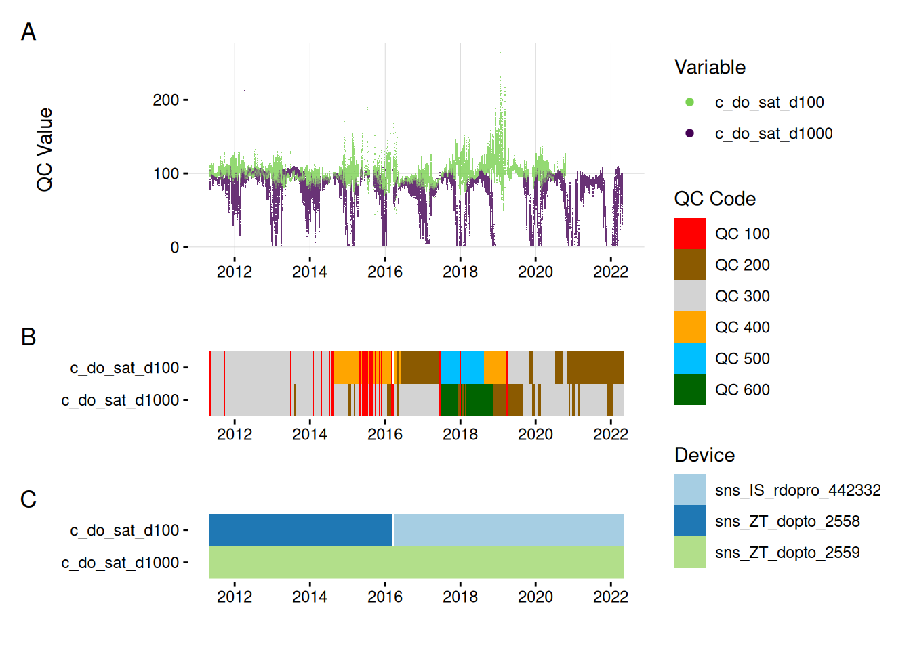
plot_var_ts_qc(data = data, var_ref_id = c("c_do_d100", "c_do_d1000"))12.3 Chlorophyll
Chlorophyll fluorescence sensors currently do not have a NEMS classification. We have therefore adapted the NEMS quality control codes to include these sensors, using similar checks and adjustments described in the Processing of Environmental Time-series Data (v1.2.0, August 2024) document.
plot_var_ts_qc(data = data, var_ref_id = c("f_chl_d100"))12.4 Phycocyanin
Phycocyanin fluorescence sensors currently do not have a NEMS classification. We have therefore adapted the NEMS quality control codes to include these sensors, using similar checks and adjustments described in the Processing of Environmental Time-series Data (v1.2.0, August 2024) document.
plot_var_ts_qc(data = data, var_ref_id = c("f_phyc_d100"))12.5 pH
pH sensors currently do not have a NEMS classification. We have therefore adapted the NEMS quality control codes to include these sensors, using similar checks and adjustments described in the Processing of Environmental Time-series Data (v1.2.0, August 2024) document.
plot_var_ts_qc(data = data, var_ref_id = c("c_ph_d100"))12.6 Meteorological variables
Meteorological data currently do not have a NEMS classification. We have therefore adapted the NEMS quality control codes to include these sensors, using similar checks and adjustments described in the Processing of Environmental Time-series Data (v1.2.0, August 2024) document.

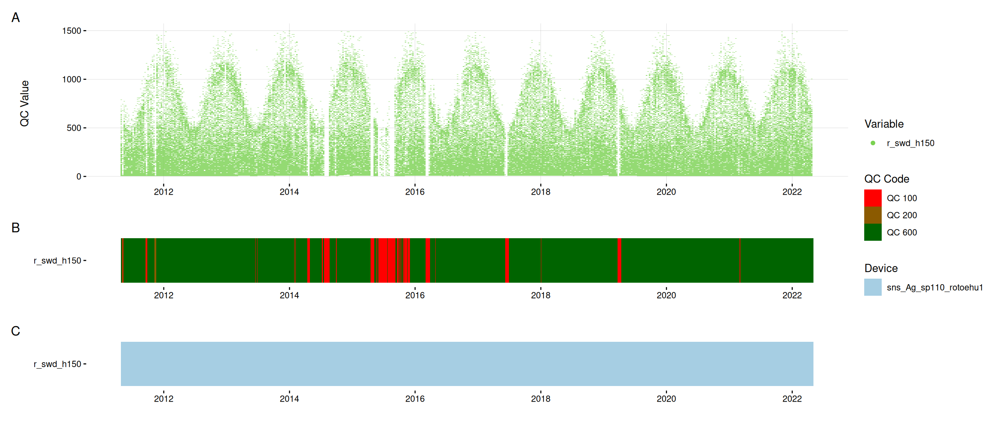

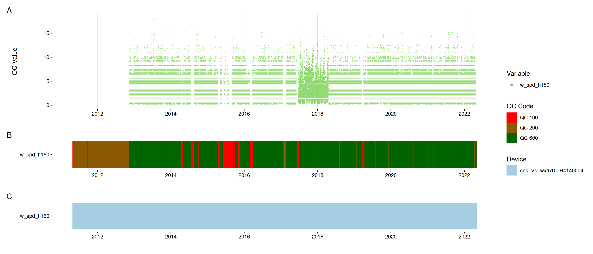
13 Download data
Download the data as a zip folder. The data is in wide format an comes with metadata files. The metadata files contain the information needed to reconstruct the quality control.